The
VOL. XCVII
PERADENIYA, SEPTEMBER, 1941
No. 3
| Page | |
|---|---|
| Editorial .. .. . | 113 |
| The Bethylid Parasite (Perisierola nephantidis M.) of the Coconut Caterpillar (Nephantis serinopa Meyr.). By T. J. Jayaratnam .. | 115 |
| Common Mistakes in Flue-curing of Tobacco. By A. B. Attygalle .. | 126 |
| Notes on Fruit Culture—I. Cultivation of Lemons .. | 129 |
| A Cheap and Efficient Honey Extractor .. | 132 |
| History of the Department of Agriculture, Ceylon .. | 135 |
| The Banana .. .. . | 138 |
| A Simple Method of Budding Tung Trees .. | 143 |
| Produce Clean Grapefruit and Oranges .. | 147 |
| The Artificial Incubation, Brooding and Rearing of Chickens .. | 151 |
| Common Diseases of Young Calves and their Control in India .. | 164 |
| Animal Disease Return for the Month ended August, 1941 .. | 181 |
| Meteorological Report for the Month ended August, 1941 .. | 182 |
1—J. N. A 6049 (9/41)
This image shows a blank, aged, cream-colored page, likely an endpaper or flyleaf from an old book. The paper has a slightly textured appearance with some minor discoloration and faint smudges, characteristic of old paper. There is no text or other markings on the page.The
Tropical Agriculturist
SEPTEMBER, 1941
EDITORIAL
THE AGEING OF COCONUT PLANTATIONS
THE following statement of the collections of the export-cess under Ordinance No. 29 of 1928 which created the Coconut Research Scheme should be of interest to coconut-land-owners in this country:
| Rs. | c. | |||
|---|---|---|---|---|
| 1929 | .. | .. | 55,540 | 52 |
| 1930 | .. | .. | 49,294 | 56 |
| 1931 | .. | .. | 55,252 | 46 |
| 1932 | .. | .. | 42,254 | 62 |
| 1933 | .. | .. | 47,992 | 64 |
| 1934 | .. | .. | 66,326 | 57 |
| 1935 | .. | .. | 47,555 | 22 |
| 1936 | .. | .. | 38,313 | 34 |
| 1937 | .. | .. | 50,531 | 91 |
| 1938 | .. | .. | 58,690 | 44 |
| 1939 | .. | .. | 50,926 | 74 |
| 1940 | .. | .. | 36,937 | 77 |
| 1941 (1st half) | .. | .. | 12,106 | 31 |
A general downward trend in the annual collection noticeably underlies the marked fluctuations from year to year. No factor other than production affecting the volume of exports operated during the period to which the statement refers. It is therefore correct to assume that this downward trend in the cess accurately reflects a corresponding decline in production. It may be said that the lower standard of cultivation induced by the fall in prices was responsible for the reduced yield in produce. But it is easy to exaggerate the importance of this factor. In the first place, going through the coconut growing districts one does not get an impression of a total abandonment of cultivation. On the contrary those larger estates that passed into the hands of Indian moneylenders as a result of the depressed market appear to receive more intensive attention under the new management than they did before. In the second place, the trees that were planted under
114the stimulus of the post-war boom of the twenties are now maturing and their contribution to the export trade should be sufficient to offset the effects of under-cultivation of older areas.
The true cause of the slow but progressive decline in production must be sought in the growing senility of the older trees. The period of rapid expansion of this plantation industry began about 60 to 70 years ago, and, while 70 years do not necessarily cover the full span of life of a coconut tree, at the age of sixty its reproductive energy is on the way to rapid decline.
A note of warning with regard to this matter was first sounded by the Geneticist of the Coconut Research Scheme at a meeting of the Coconut Planters' Joint Committee in September, 1938, followed by a similar utterance by the Director of Research at a meeting of the Chilaw Planters' Association in March, 1939. The latter officer critically analysed the position in a contribution to this journal in June, 1939, and summarized it with the observation that "for the next few years, unless estates and small holdings are increasingly taken in hand for replanting and cultivation, production will show a progressive decline". These repeated warnings appear to have gone unheeded. We feel it to be our duty to associate ourselves with them. Considering the long time that the coconut tree takes to grow to maturity, the sterilization of the land for about one human generation can be avoided only by the overlap of at least 10 years between one plantation and its successor. Failure to replant with the first signs of senility can be justified only by the intention to retire the land from the coconut crop.
115THE BETHYLID PARASITE (PERISIEROLA NEPHANTIDIS M.) OF THE COCONUT CATERPILLAR (NEPHANTIS SERINOPA MEYR.)
T. J. JAYARATNAM,
ASSISTANT IN ENTOMOLOGY
INTRODUCTION.—In an article in the Tropical Agriculturist of January, 1941, contributed by the writer (1) reference was made to a Bethylid wasp Perisierola sp., since identified as Perisierola nephantidis M., a primary larval parasite of the coconut caterpillar. It was mentioned in that article that this parasite was first recorded in Ceylon in 1937 and that it was only recorded in the Eastern coconut areas of Ceylon, where it was playing a minor rôle in the control of the caterpillar pest. Since the writing of that article an outbreak of the coconut caterpillar pest was reported from an estate in Pallai in one of the Northern coconut areas of the Island, where this wasp appeared to be playing a predominant role as a larval parasite in the control of the pest. Further this outbreak was the first record of the pest in that area after a period of 17 years.
Occurrence and Distribution.—According to Ramachandra Rao and Cherian (3) this parasite was recorded earlier than 1924 from several coconut districts in the East Coast of South India. Later it was introduced into Mangalore and the West Coast of South India. In Ceylon it was first noticed in 1937 by the writer in the Batticaloa District and this year (1941) it was recorded in the Jaffna District.
THE PARASITE (Pl. I Fig. 4.)
(a) Description and Habits.—Perisierola belongs to the family Bethylidae of the order Hymenoptera. In 1927 Ramachandra Rao and Cherian (3) discussed the life-history of this insect under the name of Parasierola sp. and in 1934 it was described by Muesebeck (2) from specimens sent from Coimbatore, South India, when the present specific name was given. The adult insect is a minute, black, ant-like wasp about 3 mm. long. The head is about as long as broad, its upper surface of a leathery texture with numerous but distinct punctures. The mandibles are black in the female and yellow in the male; the antennae are yellowish brown and about as long as the head, the basal joint broad and flattened and the remainder of the antennae much more slender. The thorax is slightly narrower than the head. The wings are
116transparent with yellowish veins, and the legs are black with the tibiae and tarsi brownish yellow. The abdomen is equal in size to the thorax but is distinctly constricted at the base and tapers gradually towards the posterior end. It has a black smooth shiny appearance.
(b) Habits and Behaviour of Adult Parasite.—The insect is very active and energetic in disposition and responds strongly to the slightest stimulus. It is capable of vigorous and rapid flight. It is also able to run quickly and with ant-like agility to work its slender elongated body through the galleries of the host caterpillar. It also exhibits a preference for cracks and similar situations. It is very active in locating host larvae and shows a tendency to be pugnacious and attempts to defend itself from attack.
The insects were observed to mate about 24 hours after emergence. The females mated only once, but a single male was found to impregnate several females. Copulation lasted about 5 minutes. Soon after mating, the adult parasites were observed to attack the host larvae. A third or fourth instar larva of the coconut caterpillar is usually chosen and one or more adult parasites attack the host, and grasping it by the mandibles insert the sting at the posterior end of their abdomen into the body of the host. A single adult parasite is able to quieten a host with two or three stings, after which the latter becomes completely paralysed. The substance injected during stinging is believed to be neurotoxic in nature and not a single host larva that was stung in this manner and paralysed ever recovered, though they showed slight movement when touched. In some cases the host was killed outright apparently by heavy stinging. The adult parasite usually feeds on the body juices of the paralysed host larva before it begins to oviposit on it and more host larvae may be stung and paralysed than are utilized for oviposition. According to Ramachandra Rao and Cherian (3) only the full grown larva in the pre-pupal stage is attacked by the parasite but in this study the full grown host larva prior to or during the pre-pupal stage was never observed to be attacked. In more than one instance the death of the adult parasite resulted in its attempt to attack full grown caterpillars from the vigorous efforts of the caterpillar to dislodge it and reach it with its mandibles. On the other hand when second instar larvae were attacked as occurred in rare cases these were killed outright, and the parasite was found to avoid ovipositing on such dead host material. Oviposition on the host did not take place immediately it was stung and paralysed, but shortly after. Eggs were deposited singly but generally in rows on any part of the host, from the third to the last segment of the body, the head being counted as the first segment.
A large, faint watermark of a classical building, likely a library or archive, is centered on the page. It features a triangular pediment supported by four vertical columns, all resting on a base. The watermark is rendered in a light gray tone that blends with the background.Digitized by the Internet Archive
in 2025
https://archive.org/details/tropical-agriculturist_1941-09_97_3
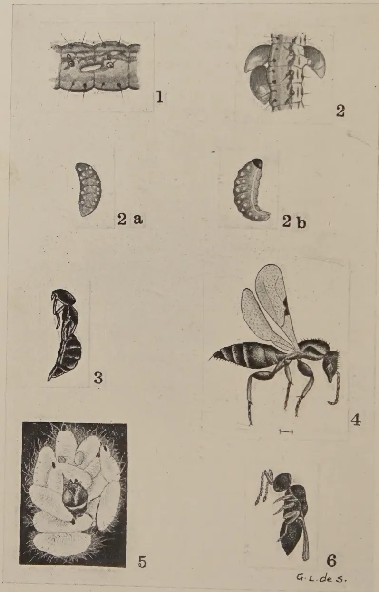
THE BETHYLID PARASITE OF THE COCONUT CATERPILLAR.
Fig. 1.—Egg .
Fig. 2.—Grubs .
Fig. 2A.—Half-grown grubs .
Fig. 2B.—Full grown grubs .
Fig. 3.—Pupa .
Fig. 4.—Perisierola .
Fig. 5.—Cocoons with head of host .
Fig. 6.—Calliceras sp. .
117The number of eggs laid by a parasite on one single host caterpillar varied from 1 to 15, each egg being laid after an interval of about 5 minutes. When several host larvae were supplied to one single adult parasite, the parasite laid a few eggs at a time, each batch of eggs being confined to a single host. When only a single host was supplied the parasite after laying a batch of eggs on the host refrained from ovipositing further until fresh host was supplied, which was readily attacked and used for oviposition. Superparasitism was thus never found to take place. The maximum number of eggs laid by a single adult parasite was 74 during a period of 13 days on 12 host larvae. The average number of eggs laid by each of the 18 female parasites under observation was 19. The maximum number of days a female and male parasite lived under laboratory conditions when fed on sugar and water was 26 and 22 days respectively, and the average length of life of an adult was 17 days. It was found that parasites which were fed on sugar and water laid more eggs and lived longer than those which only obtained the body juices of the host larva for their nourishment.
(c) Development.—The eggs (fig. 1) are minute slender elongated objects about mm. long and slightly broader at the base. They are of a dull whitish colour. Hatching was observed to occur approximately 24 to 40 hours after deposition.
The newly hatched grub (fig. 2) is semi-transparent but within a few hours it gets more rounded and turns light yellow. On the second day (fig. 2A) it becomes pinkish and on the third day (fig. 2B) the colour deepens and the body is marked with white dots. The full grown grub measures about 3 mm. It has a tapering body with a swelling at the hinder end. The grub is ecto-parasitic in habit and attaches itself to the body of the host at the point of attachment of the egg. When dislodged from its position, the grub was never able to regrasp the host or continue its feeding and consequently died. In about to days the grub becomes full grown and by this time the body of the host has usually become almost completely desiccated. The grub now detaches itself from the remains of the host and begins to construct a small white oval cocoon. The cocoons (fig. 5) are spun in groups massed together within the galleries of the host larva on the coconut leaflets and usually just beside the remains of the host. After the cocoons are spun the grub casts off its meconium which may be found at one end of the cocoon and gradually turns into a pupa.
The pupa (fig. 3) when fresh is grey in colour but on the fourth day the whole body turns black. The body and limbs of the adult may be clearly seen at this stage through the enclosing pupal skin. On or about the fifth day the pupal skin is cast off. The adult remains in the cocoon till the
118cuticle of its body and wings are hardened. It finally emerges by biting a hole through the side of the cocoon. The actual pupal period lasts about 5 days (this is excluding the period of quiescence prior to emergence from the cocoon). It was observed on several instances that the adults after emerging from the cocoons re-enter them for short periods before they finally begin their active life. The total length of the life-cycle of Perisierola from egg to emergence of adults varies from to 15 days.
The following table gives the life-history records of 18 adult female parasites.
[For Table see pages 121-125]
Natural Enemies of Perisierola.—The exposed position of the grubs and cocoons of Perisierola makes them readily vulnerable to hyperparasites. In South India, five natural enemies of Perisierola, 3 hymenopterons, a mite and a fungus are recorded by Ramachandra Rao and Cherian (3).
In Ceylon, the only recorded hyperparasite of Perisierola is a Calliceratid wasp—(Calliceras) sp. (fig. 6) which attacks only the pupal stage of its host. Several of these minute wasps mob a single cocoon of Perisierola and lay eggs on it. The grubs that hatch out pierce through the cocoon and attack the pupa, but apparently only if it is in pre-pupal stage as it was observed that cocoons older than three days were not attacked. The life-cycle of Calliceras from laying of eggs to emergence of adults was 15 days, which is almost the same period as that of its host, and the adult lived up to a fortnight. It is therefore unlikely that this hyperparasite can appreciably reduce the effectiveness of Perisierola. 24 621
The Value of Perisierola as a Control Factor for the Coconut Caterpillar.—The parasite has many features which should enable it to become a significant factor in the control of the coconut caterpillar pest. Its life-cycle is relatively short and it can pass through 3 or 4 generations during a single generation of its host. It can attack its host for a relatively long period of the latter's life-history, that is about 2 weeks, as it attacks the caterpillar and parasitizes it successfully at any stage between the third and the fifth larval instars. Apart from actual parasitization it probably disposes of a number of host larvae by attacking them for feeding purposes, which greatly increases the controlling effect which it exercises over the pest. Further it is active and energetic in disposition and appears to have a high dispersal value and great ability in locating its host. Also the females outnumber the males in the proportion of 3 to 1, and finally it has no tendency to superparasitism.
119The chief factors which limit its utility are hyperparasites and weather conditions. Of the former although there are five recorded in South India by Ramachandra Rao and Cherian (3), in Ceylon there appears to be, as far as is known at present, only one hyperparasite, namely Calliceras, and this seems to be of minor importance. Weather conditions however appear to have a very marked effect on it and is probably the chief limiting factor of its population level. Its ecto-parasitic habit makes it still further susceptible to weather conditions. Judging from its distribution, extremes of relative humidity are very unfavourable for it, and such conditions combined with high temperature no doubt act fatally on its development and disposition. Thus it has never been recorded in the highly humid Central and Western coconut areas of the Island. It is practically always present in the Eastern District but it does not appear at any time to assume significant proportions. This is no doubt due for the most part to the relatively long periods during the year in which the weather conditions are actually unfavourable for the parasite. In the Northern or Jaffna District where favourable weather conditions are existent for a longer period during the year it appears to exert a much greater controlling effect, which has been found to be diminishing with the advent of the extremely hot and dry weather. It seems on the whole, therefore, that Perisierola could be an effective controlling factor only in limited outbreaks of the pest which occur in regions where the change-over from the wet to the dry seasons is relatively gradual and in the absence of serious hyperparasites.
I am deeply grateful to Dr. B. A. Baptist, B.Sc. Hons (Lond.), Ph.D. (Cantab.), Acting Entomologist, for his helpful interest and guidance during the course of this work. I am also much indebted to the Government Entomologist, Department of Agriculture, Madras, for the identification of the parasite.
120REFERENCES4 619 1. Jayaratnam, T. J.—1941. A study of the control of the coconut caterpillar (Nephantis serinopa Meyr.) in Ceylon with special reference to its Eulophid parasite (Trichospilus pupivora Ferr.). The Tropical Agriculturist. January, pp. 3-21.
22 713 2. Muesebeck, C. F. W.—1934. Seven new species of Indian Bethylidae (Hymenoptera). Records of Indian Museum. Vol. XXXVI., pp. 225-26.
17 113 3. Ramachandra Rao, Sahib V., and Cherian, M.C.—1927. Notes on the life-history and habits of Perisierola sp.—the Bethylid parasite of Nephantis serinopa. Madras Agricultural Department Year Book, pp. 11-22.
121| Serial No. | Date adult parasite emerged. | Date mating was observed. | Date host was supplied. | Date eggs were laid. | No. of eggs laid. | Date eggs hatched. | Incubation period in hours (approx.). | Date cocooning was observed. | Larval period in days. | Date of emergence of adults. | Pupal period in days. | Total life-cycle in days from egg to adult. | Total No. of eggs laid by parent parasite. | Total No. of host larvae on which eggs were laid. | Date of death of parent parasite. | Longevity of parasite in days. | Remarks. | |
|---|---|---|---|---|---|---|---|---|---|---|---|---|---|---|---|---|---|---|
| E1* | A.M. 27.2.41 |
P.M. 27.2.41 |
A.M. 28.2.41 |
A.M. 2.3.41 |
3 | 2.3.41 A.M. |
36-40 | A.M. 6.3.41 |
3 | A.M. 14.3.41 |
8 | 12 | 8.3.41 Host larva and grubs died | |||||
| A.M. 3.3.41 |
A.M. 4.3.41 |
4 | 5.3.41 A.M. |
36 | ||||||||||||||
| A.M. 4.3.41 |
P.M. 4.3.41 |
4 | A.M. 6.3.41 |
36-40 | P.M. 8.3.41 |
2½ | A.M. 16.3.41 |
8 | 12 | |||||||||
| P.M. 4.3.41 |
A.M. 5.3.41 |
6 | P.M. 6.3.41 |
36 | A.M. 17.3.41 |
12 | ||||||||||||
| A.M. 5.3.41 |
A.M. 6.3.41 |
7 | A.M. 7.3.41 |
24 | P.M. 9.3.41 |
2½ | A.M. 18.3.41 |
8½ | 12 | |||||||||
| A.M. 6.3.41 |
A.M. 7.3.41 |
3 | A.M. 8.3.41 |
24 | A.M. 21.3.41 |
14 | ||||||||||||
| A.M. 7.3.41 |
A.M. 9.3.41 |
8 | A.M. 10.3.41 |
24 | A.M. 23.3.41 |
14 | ||||||||||||
| A.M. 9.3.41 |
A.M. 11.3.41 |
5 | A.M. 12.3.41 |
24 | ||||||||||||||
| A.M. 11.3.41 |
6 | |||||||||||||||||
| A.M. 14.3.41 |
A.M. 15.3.41 |
6 | ||||||||||||||||
| A.M. 15.3.41 |
A.M. 19.3.41 |
10 | ||||||||||||||||
| A.M. 19.3.41 |
A.M. 21.3.41 |
12 | ||||||||||||||||
| 74 | 12 | 2½ | 3.41 25-26 | Host larvae were attacked but no eggs were laid |
* Fed on sugar and water.
122
| Serial No. | Date adult parasite emerged. | Date mating was observed. | Date host was supphed. | Date eggs were laid. | No. of eggs laid. | Date eggs hatched. | Incubation period in hours (approx.). | Date cocooning was observed. | Larval period in days. | Date of emergence of adults. | Pupal period in days. | Total life-cycle in days from egg to adult. | Total No. of eggs laid by parent parasite. | Total No. of host larvae on which eggs were laid. | Date of death of parent parasite | Longevity of parasite in days. | Remarks. |
|---|---|---|---|---|---|---|---|---|---|---|---|---|---|---|---|---|---|
| E 2* | A.M. 27.2.41 |
P.M. 27.2.41 |
A.M. 28.2.41 |
A.M. 4.3.41 |
15 | P.M. 5.3.41 |
36 | A.M. 8.3.41 |
2½ | A.M. 15.3.41 |
8 | 13 | Host larva and parasite grubs died | ||||
| A.M. 4.3.41 |
2 | P.M. 6.3.41 |
36 | — | — | — | — | — | |||||||||
| A.M. 5.3.41 |
8 | A.M. 8.3.41 |
24 | P.M. 10.3.41 |
2½ | A.M. 19.3.41 |
8½ | 12 | |||||||||
| A.M. 7.3.41 |
5 | A.M. 9.3.41 |
24 | — | — | — | — | — | |||||||||
| A.M. 8.3.41 |
— | — | — | — | — | — | — | — | |||||||||
| A.M. 9.3.41 |
5 | A.M. 11.3.41 |
24 | — | — | — | — | — | |||||||||
| A.M. 10.3.41 |
8 | — | — | — | — | — | — | — | |||||||||
| A.M. 11.3.41 |
— | — | — | — | — | — | — | — | |||||||||
| A.M. 14.3.41 |
9 | — | — | — | — | — | — | — | |||||||||
| A.M. 16.3.41 |
— | — | — | — | — | — | — | — | |||||||||
| E 3* | do. | do. | A.M. 28.2.41 |
A.M. 2.3.41 |
12 | A.M. 4.3.41 |
40 | A.M. 6.3.41 |
2½ | A.M. 14.3.41 |
8 | 12 | Host larvae not touched at all | ||||
| A.M. 3.3.41 |
— | — | — | — | — | — | — | — | — | ||||||||
| A.M. 5.3.41 |
— | — | — | — | — | — | — | — | — | ||||||||
| A.M. 11.3.41 |
— | — | — | — | — | — | — | — | — | ||||||||
| G * | 28.2.41 | — | A.M. 3.3.41 |
A.M. 6.3.41 |
8 | P.M. 7.3.41 |
36 | P.M. 9.3.41 |
— | A.M. 18.3.41 |
8½ | 12 | do. | ||||
| A.M. 1.3.41 |
— | — | — | — | — | — | — | — |
* Fed on sugar and water.
123
| Group | Date | Host larva accidentally killed | Fifth instar larvae were not attacked at all | |||||||||
|---|---|---|---|---|---|---|---|---|---|---|---|---|
| A.M. | A.M. | A.M. | A.M. | A.M. | A.M. | A.M. | A.M. | A.M. | A.M. | |||
| G* | 28.2.41 | 6.3.41 | 8.3.41 | 6 | 9.3.41 | 24 | — | — | — | — | — | — |
| 8.3.41 | 9.3.41 | 6 | 10.3.41 | 36 | — | 22.3.41 | — | 13 | — | — | ||
| 10.3.41 | 11.3.41 | 3 | — | — | — | 23.3.41 | — | 12 | — | — | ||
| 11.3.41 | 14.3.41 | 4 | — | — | — | — | — | — | — | — | ||
| 14.3.41 | — | — | — | — | — | — | — | — | 27 | 16 | ||
| G1* | 28.2.41 | 3.3.41 | 6.3.41 | 10 | 7.3.41 | 30 | 9.3.41 | 21 | 18.3.41 | 8½ | 12 | — |
| 1.3.41 | 6.3.41 | 7.3.41 | 6 | 8.3.41 | 24 | 10.3.41 | 2½ | 19.3.41 | 8½ | 12 | 13 | |
| G2* | do. | 3.3.41 | 6.3.41 | 11 | 7.3.41 | 30 | 9.3.41 | 2½ | 18.3.41 | 8½ | 12 | — |
| 6.3.41 | 8.3.41 | 5 | 9.3.41 | 24 | 12.3.41 | 3½ | 21.3.41 | 8½ | 13 | — | ||
| 8.3.41 | 12.3.41 | 3 | — | — | — | — | 25.3.41 | — | 13 | 16 | ||
| 12.3.41 | — | — | — | — | — | — | — | — | 19 | — | ||
| G3* | do. | 3.3.41 | 5.3.41 | 7 | 6.3.41 | 30 | 8.3.41 | 2 | — | — | — | — |
| 5.3.41 | — | — | — | — | — | — | — | — | — | — | ||
| 7.3.41 | 10.3.41 | 10 | 11.3.41 | 24 | — | — | — | — | — | — | ||
| 10.3.41 | 13.3.41 | 5 | 14.3.41 | 24 | — | — | — | — | — | — | ||
| 14.3.41 | 16.3.41 | 1 | — | — | — | — | — | — | 23 | 17 | ||
| G4* | do. | 3.3.41 | 4.3.41 | 3 | 6.3.41 | 40 | 8.3.41 | 2½ | 17.3.41 | 8½ | 13 | — |
| 4.3.41 | — | — | — | — | — | — | — | — | — | — | ||
| 4.3.41 | — | — | — | — | — | — | — | — | — | — | ||
* Fed on sugar and water.
124
| Serial No. | Date adult parasite emerged. | Date mating was observed | Date host was supplied. | Date eggs were laid. | No. of eggs laid. | Date eggs hatched. | Incubation period in hours (approx.). | Date cocooning was observed. | Larval period in days. | Date of emergence of adults. | Pupal period in days. | Total life-cycle in days from egg to adult. | Total No. of eggs laid by mother parasite. | Total No. of host larvae on which eggs were laid. | Date of death of mother parasite. | Longevity of parasite in days. | Remarks. |
|---|---|---|---|---|---|---|---|---|---|---|---|---|---|---|---|---|---|
| G 4* | 28.2.41 1.3.41 |
P.M. 4.3.41 A.M. |
A.M. 6.3.41 A.M. |
3 | A.M. 7.3.41 |
24 | P.M. 9.3.41 |
2½ | A.M. 18.3.41 |
8½ | 12 | Host died | |||||
| A.M. 6.3.41 |
A.M. 7.3.41 |
2 | — | — | — | — | — | — | — | ||||||||
| A.M. 7.3.41 |
A.M. 8.3.41 |
3 | A.M. 9.3.41 |
24 | A.M. 12.3.41 |
3 | A.M. 20.3.41 |
8 | 12 | ||||||||
| A.M. 8.3.41 |
A.M. 9.3.41 |
3 | A.M. 10.3.41 |
24 | A.M. 13.3.41 |
3 | A.M. 22.3.41 |
9 | 13 | ||||||||
| A.M. 9.3.41 |
— | 4 | — | — | — | — | A.M. 26.3.41 |
— | — | 22 | 7 | 13.3.41 | 14 | ||||
| A.M. 10.3.41 |
— | — | — | — | — | — | — | — | — | ||||||||
| G 5* | do. | — | A.M. 3.3.41 A.M. |
A.M. 7.3.41 A.M. |
11 | A.M. 8.3.41 A.M. |
24 | P.M. 10.3.41 |
2½ | A.M. 19.3.41 P.M. |
9 | 12 | |||||
| A.M. 7.3.41 |
A.M. 10.3.41 |
12 | A.M. 11.3.41 |
24 | — | — | A.M. 21.3.41 |
— | 11½ | 23 | 2 | 15.3.41 | 16 | ||||
| A.M. 10.3.41 |
— | — | — | — | — | — | — | — | — | ||||||||
| G 7* | do. | — | A.M. 3.3.41 A.M. |
A.M. 5.3.41 A.M. |
6 | P.M. 6.3.41 |
30 | — | — | P.M. 16.3.41 |
— | 11½ | |||||
| A.M. 5.3.41 |
A.M. 7.3.41 |
5 | — | — | — | — | — | — | — | ||||||||
| A.M. 7.3.41 |
— | — | — | — | — | — | — | — | — | 11 | 2 | 10.3.41 | 11 | Host died | |||
| H. | 1.3.41 | — | A.M. 3.3.41 A.M. |
A.M. 6.3.41 A.M. |
8 | P.M. 7.3.41 A.M. |
30 | — | — | — | — | — | Host and parasite grubs died | ||||
| A.M. 6.3.41 |
A.M. 9.3.41 |
6 | A.M. 10.3.41 |
24 | — | — | 21.3.41 | — | 12 | 14 | 2 | 13.3.41 | 13 | ||||
| A.M. 9.3.41 |
— | — | — | — | — | — | — | — | — |
* Fed on sugar and water.
125
| H 1. | 1.3.41 | — | A.M. 3.3.41 |
A.M. 4.3.41 |
3 | A.M. 5.3.41 |
30 | P.M. 8.3.41 |
3½ | 17.3.41 | — | 13 | 3 | 1 | 5.3.41 | 5 |
| J. | 3.3.41 | 4.3.41 | A.M. 5.3.41 |
A.M. 8.3.41 |
5 | P.M. 9.3.41 |
36 | P.M. 12.3.41 |
3 | A.M. 21.3.41 |
9 | 13 | ||||
| A.M. 8.3.41 |
A.M. 10.3.41 |
5 | A.M. 11.3.41 |
24 | — | — | — | — | — | 10 | 2 | 12.3.41 | 10 | |||
| 10.3.41 | — | — | — | — | — | — | — | — | — | — | — | — | — | |||
| J 1. | do. | do. | A.M. 5.3.41 |
A.M. 8.3.41 |
7 | P.M. 9.3.41 |
36 | A.M. 13.3.41 |
3½ | A.M. 21.3.41 |
8 | 13 | ||||
| A.M. 8.3.41 |
— | 5 | — | — | — | — | — | — | — | — | 2 | 15.3.41 | 13 | |||
| 14.3.41 | — | — | — | — | — | — | — | — | — | — | — | — | — | |||
| — | — | — | — | — | — | — | — | — | — | — | — | — | — | |||
| J 2. | do. | do. | A.M. 5.3.41 |
P.M. 7.3.41 |
6 | A.M. 9.3.41 |
36 | — | — | A.M. 22.3.41 |
— | 14½ | ||||
| A.M. 5.3.41 |
P.M. 9.3.41 |
4 | — | — | — | — | — | — | — | — | — | — | — | |||
| A.M. 7.3.41 |
— | — | — | — | — | — | — | — | — | — | — | — | — | |||
| 9.3.41 | — | — | — | — | — | — | — | — | — | 10 | 2 | 12.3.41 | 10 | |||
| J 3. | do. | do. | A.M. 5.3.41 |
A.M. 7.3.41 |
4 | — | — | — | — | — | — | — | — | — | — | — |
| A.M. 7.3.41 |
P.M. 8.3.41 |
1 | A.M. 10.3.41 |
36 | — | — | — | — | — | — | 5 | 12.3.41 | 10 | |||
| 8.3.41 | — | — | — | — | — | — | — | — | — | — | — | — | — | |||
| — | — | — | — | — | — | — | — | — | — | — | — | — | — | |||
| J 4. | do. | do. | A.M. 5.3.41 |
P.M. 7.3.41 |
2 | A.M. 9.3.41 |
36 | P.M. 12.3.41 |
3½ | A.M. 21.3.41 |
8½ | 13½ | ||||
| A.M. 7.3.41 |
— | 5 | — | — | — | — | — | — | — | — | 7 | 12.3.41 | 10 | |||
| 9.3.41 | — | — | — | — | — | — | — | — | — | — | — | — | — | |||
| — | — | — | — | — | — | — | — | — | — | — | — | — | — | |||
| K. | do. | do. | A.M. 5.3.41 |
A.M. 8.3.41 |
6 | A.M. 9.3.41 |
24 | P.M. 12.3.41 |
3½ | A.M. 21.3.41 |
8½ | 13 | ||||
| A.M. 8.3.41 |
— | 5 | A.M. 10.3.41 |
24 | — | — | 22 23 |
— | 13-14 | 2 | 12.3.41 | 10 | ||||
| 9.3.41 | — | — | — | — | — | — | — | — | — | 11 | — | — | — |
N.B.—A single host larva was supplied to each female parasite and when oviposition was noticed on it, a fresh host was supplied and the parasitized host removed.
126A. B. ATTYGALLE,
ASSISTANT TO TOBACCO OFFICER
SOME of the difficulties in the flue-curing of cigarette tobacco can be directly traced to the field. For example, the faulty field management and adverse climatic conditions exercise some influence on the standard of curing operations.
Field Management.—Thorough preparation of the land followed by proper after-cultivation and cultural methods, such as priming, topping and suckering, materially influence the results of curing. A crop of tobacco correctly primed, topped and suckered ripens more uniformly and produces a better tobacco than a crop which is unprimed and topped either too high or too low. The time of planting also plays a very important part; less difficulty is usually experienced in curing tobacco planted during the earlier part of the season than in curing the later planted portion of the crop.
Climatic Conditions.—During seasons of adverse weather conditions, it is usual to expect certain difficulties in the curing of the crop. Should a prolonged spell of dry weather occur when the tobacco is nearing maturity the leaf turns yellow and commences to perish on the plant. This type of leaf when placed in the barn yellows well and retains the good colour until the fixing of the colour; after that stage the colour changes to green and the cured product will be on the green side. This is due to the leaf being immature; the yellowing of leaf in the field is an indication that the plant is perishing for want of moisture though it is very often mistaken as a sign of ripening, and this is known as false ripening. When false ripening is observed it is best to give a good irrigation or hand watering if water is available and delay the harvest for a week or so. If water is not available for irrigating or hand watering and the weather continues to be dry, the only course open is to proceed with the harvesting.
Heavy or continuous rain after a spell of dry weather will induce "second growth", which makes the leaf very difficult to cure, and it is best to delay the harvesting till the leaf shows signs of ripening again.
127Harvesting.—Fully ripe leaf of uniform body and texture should be harvested for each barn ; good care exercised in this respect materially helps in the curing operations. Very often damaged and over-ripe leaf is harvested and cured in place of good leaf which, if left on the plant too long, loses quality. It is very important that the leaves of each bunch should be placed back to back when tied on to the sticks and the number of bunches should fill the stick without over-crowding. When filling the barn good care should be taken to place the sticks of tobacco evenly along the tiers to avoid over-crowding. In an over-crowded barn the leaf is liable to “sponge”.
Curing.—The timely use of top ventilation will prevent the yellow leaf from sponging and a minimum of bottom ventilation will prevent the atmosphere of the barn from drying too rapidly, thus giving the greener tobacco a better opportunity of yellowing. As the curing season advances the rate of curing gradually becomes slower as the leaf takes a longer period to yellow. During the time of curing a good deal of damage to tobacco is experienced through raising the temperature by sudden jumps, e.g., 10° at a time, thus rendering the leaf brittle, besides scorching the leaf to some extent.
It is not possible to prescribe a definite formula for flue-curing since the method to be adopted for any particular barn load is subject to modifications owing to different varieties grown, soil types, different stages of maturity, the variable texture of the leaf, climatic conditions and other factors. However the following points should be remembered when flue-curing a barn of tobacco:—
(1) For successful flue-curing proper harvesting of tobacco is of the utmost importance as ripeness influences the quality of the cured product.
(2) The eye should be trained to judge a fully ripe leaf and only fully ripe leaf with colour, i.e., yellowish green, should be harvested for flue-curing.
(3) Uniformity in harvesting makes curing easy.
(4) Green tobacco has no value and therefore every precaution should be taken to reduce it to the absolute minimum.
(5) Adequate barn accommodation and tying-sheds will facilitate harvesting of tobacco.
(6) Tobacco leaf should be very carefully handled during harvest, transport and tying on the sticks, otherwise damage will result in much loss to the grower.
(7) Curing of tobacco demands considerable skill and experience and it should be studied as such.
(8) The barns should not be over-crowded as this will sponge the leaf which will reduce in value.
(9) The curing barns and other requisite buildings should be in proper order and trim before the crop is due for harvesting.
128(10) Adequate supervision should be provided throughout the harvesting and curing of your crop.
(11) More tobacco than can be conveniently accommodated in the barns and buildings should not be grown.
(12) The temperature should be kept as constant as possible throughout the curing process.
(13) In wet weather it is necessary to ventilate sooner than in dry weather.
(14) During cool weather a slightly low temperature should be maintained during the yellowing stage and higher temperature during wet weather for fixing the colour of the leaf.
(15) During the yellowing stage the temperature should not be raised more rapidly than by 5 degrees at a time when changes in the leaf are observed.
(16) During the fixing stage the temperature should not be raised more rapidly than by degrees every hour unless there is some difficulty in reducing the moisture in the barn. In such a case flash the temperature from to F. in a short time and maintain it for half an hour and reduce it again to F.
(17) Green and heavy-bodied leaf will require a longer period and higher humidity during the yellowing stage than fully ripe and yellowish green light-textured leaf.
(18) Tobacco which has not been grown suitably for flue-curing cannot be cured successfully and in attempting to cure this type of tobacco a very slow rate of curing should be followed until the requisite yellowing is obtained.
(19) Every effort should be made to produce quality rather than quantity.
129A. V. RICHARDS, M.Sc. (Calif.), B.Sc. (Lond.), Dip. Agric. (Cantab.),
A.I.C.T.A. (Trinidad),
HORTICULTURAL OFFICER
THE lemon (Citrus limonum Risso) is an important member of the citrus family which is highly esteemed for its characteristic acid flavour. It is grown on a commercial scale chiefly in Southern California and the Mediterranean region bordering Italy where the soil and climatic conditions are extremely favourable for the production and curing of the fruit. Both these regions together produce enough lemons to supply most of the world markets.
Varieties.—The varieties of commercial importance are Eureka, Lisbon, Villafranca and Genoa, all of which bear fruit throughout the year although the peak of production may occur in early summer or mid-winter depending on the variety. Eureka is the leading variety grown in California. It is prolific and the fruit is of excellent quality. The tree is thornless, comes into bearing early and its production reaches the peak during the summer months when lemons are in demand. An undesirable characteristic of this variety is its tendency to produce fruit on the tips of long canes which drop their leaves as they bend over, thus exposing the fruit and branches to sun-scorch. Except for a few strains which are known to be somewhat vigorous and productive, the others tend to decline after a few years when budded on sour orange stock. For this reason many growers prefer to use trees budded on sweet orange or rough lemon stock.
Lisbon is a vigorous grower having heavy foliage which protects the fruit from sunburn, but the tree is thorny and produces most of its crop during the winter. The fruit does not keep long in storage as the skin is somewhat loose and the centre hollow.
Of the two remaining varieties Villafranca is intermediate in type between Eureka and Lisbon and is the variety commonly grown in Florida. Genoa is nearly thornless and produces fruit of good quality which keeps well in storage.
130Picking and Grading.—Lemon trees have lighter green foliage than the orange and may grow to a height of 10 to 20 feet. A single tree may produce as many as 3,000 fruits a year under favourable conditions. The fruit is picked by size rather than by colour. The best grades are picked green when the fruit has the maximum of acidity. Each picker carries a ring in his left hand which he slips over the fruit to test its size. The rings commonly used vary from 2 6/32 to 2 9/32 inches in diameter. Every green fruit that does not pass through the ring is picked together with yellow or tree ripe fruit. The latter is picked regardless of size.
After picking, the fruits are taken to the packing house where they are left for a day or two to wilt, then washed and graded according to colour into green, light green, silver and tree ripe, silver being yellow fruit with a touch of green at the blossom end. These fruits are then cured by placing in storage rooms in which the temperature is maintained at 55°F and humidity at 90 per cent. In the process of curing which may take from 8 weeks for the green fruit to a week or two for "silver", the skin of the fruit turns glossy yellow and becomes thinner, thus making it easy to extract the juice. No fruit is kept in storage for over six months. After curing, the fruits are again graded by appearance and size, and shipped to the markets.
Sometimes when the demand for lemons is heavy, curing is hastened by treatment with ethylene but such fruits do not ship well.
Local Production.—In recent years the cultivation of lemons has received some attention in Ceylon where the semi-dry areas up-country at an elevation of 3,000 to 4,500 feet appear to be suitable for them. Elsewhere in the low-country they do not grow so well as the lime and are hardly known. The trees shown in Plates I. and II. are imported South African budgrafts of the Genoa variety grown at Uva Orange Farm, Diyatalawa, at an elevation of 4,300 feet. They were supplied by Messrs. H. E. V. Pickstone & Brothers, Simondium, Cape of Good Hope, and planted in May, 1941. Their rootstock is believed to be rough lemon which is the stock used almost exclusively for citrus in South Africa. Except for occasional hand watering for the first six months after planting, the trees have not received much irrigation but have depended on the rainfall which averages 63 inches annually with a drought period of about 3½ months. Recently with the increase in size of the trees it has been found necessary to apply irrigation water during the drought period in furrows running along the contour about three feet from the main stem.
The trees are planted on contour terraces each nine feet wide. They were given a liberal dressing of well-rotted horse manure
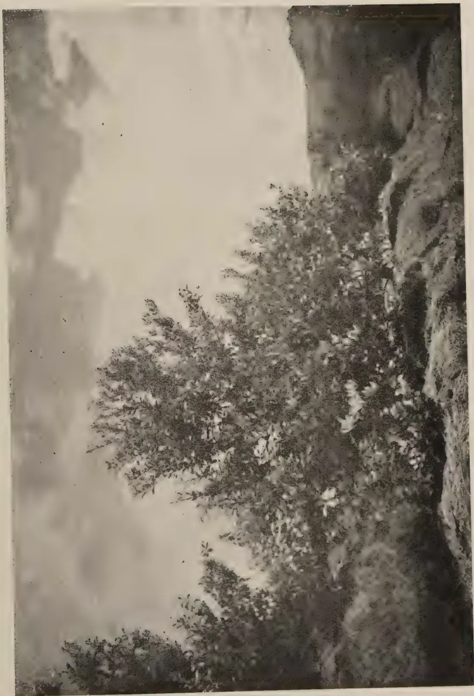
A black and white photograph of a large, dense tree, likely an orange tree, with many branches and leaves. The tree is situated in a field, and the background shows a hazy, distant landscape with hills or mountains under a cloudy sky.PLATE I.
IMPORTED SOUTH AFRICAN BUDGRAFT OF LEMON (GENOA VARIETY) GROWN AT UVA ORANGE FARM, DIYATAIAWA.
This image is a scan of a blank page. The paper has a light beige or cream-colored tint. There are a few very small, faint dark spots scattered across the surface, which appear to be scanning artifacts or minor imperfections in the paper. No text, lines, or other markings are present.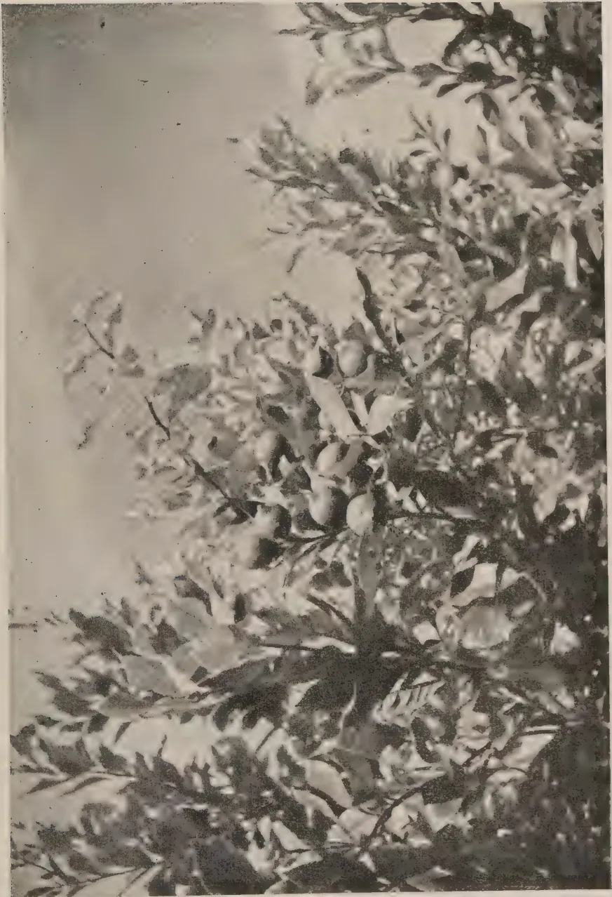
A black and white photograph showing a dense branch of a lemon tree. The branch is covered with numerous small, oval-shaped leaves and several round lemons. The lighting is bright, creating strong highlights on the leaves and fruit, with deep shadows in the foliage. The background is a light, out-of-focus sky.PLATE II.
IMPORTED SOUTH AFRICAN BUDGRAFT OF LEMON (GENOA VARIETY) GROWN AT UVA ORANGE FARM, DIYATALAWA.
This image is a scan of a blank page. The paper has a light beige or cream-colored tint. There are a few very small, faint dark spots scattered across the surface, which appear to be scanning artifacts or minor imperfections in the paper. No text, lines, or other markings are present. 131soon after planting and have since then received a top dressing of sulphate of ammonia every six months and an yearly application of dolomitic lime and compost made of coir dust. Just before drought sets in, the main stem and lower branches are lime-washed with ordinary lime to which is added zinc sulphate at the rate of one tablespoonful per gallon of lime wash.
The trees average 9 feet 8 inches in height, and have a good spread of foliage, which is kept sprayed as a routine measure with Sulfinette, Kerala fish oil soap and nicotine sulphate (Black Leaf 40). They have already come into bearing and promise to be highly productive in years to come.
132V. E. DALPADADO,
ASSISTANT FARM SCHOOL OFFICER, WARIYAPOLA
THE absence of a cheap device for the extraction of comb honey is a difficulty which confronts the village bee-keeper. The Martandam pattern honey extractor is too costly. It is also beyond the workmanship of the ordinary village blacksmith as two cog wheels are required in its construction; and these are expensive and difficult to procure. It is the wish of the writer to popularize a cheap yet efficient extractor which costs about Re. 1 to make, and one which a villager with limited means could turn out.
The writer hopes that this inexpensive extractor will help not only the village bee-keeper to develop bee-keeping as a subsidiary home industry, but also the amateur bee-keeper who keeps bees as a hobby and for profit.
(a) The Bamboo Cistern.—The bamboo cistern is 14 inches long and 6 to 8 inches in diameter. The two edges of the cistern are sawn off evenly leaving two projections diametrically opposite to each other on the top edge of the cistern. The projections should be about 2 inches long and one inch broad. (Fig. I. A.A.) The handle is fixed on these two projections.
A water-tight base is fitted to the open bottom end of the cistern and nailed. (Fig. I. B.) Just flush with the bottom plank a hole, inch in diameter, is bored in the container and a metal tubing about inches long is fixed. (Fig. I. C.) This serves as an outlet for the honey when extraction is in progress. Another hole of the same diameter is provided in the middle of one projection, (Fig. I. D.), and the twine required for revolving the centre-piece passes through this hole.
(b) The Bottom Plank.—This is made out of one inch thick plank. A small hole ( inch in diameter and inch in depth) is made in its centre. The sides of the hole may be lined with a
This image is a scan of a blank page. The background is a uniform light beige or off-white color. There are a few very small, faint dark spots scattered across the surface, which appear to be scanning artifacts or dust particles. A slightly more prominent dark mark is visible near the bottom center of the page, possibly a smudge or a small ink mark. The overall texture is smooth but has the slight graininess of a scanned document.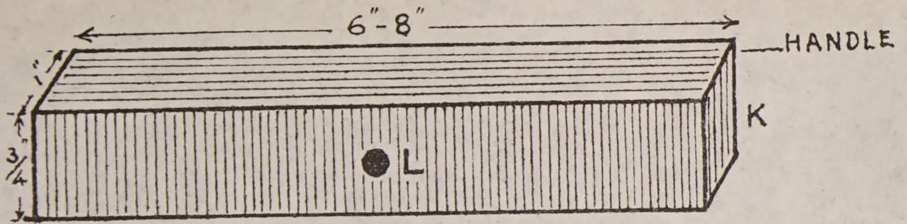
Isometric drawing of a rectangular wooden handle. The length is indicated as 6"-8". The width is indicated as 3/4". The height is indicated as 1". The right end is labeled "HANDLE". A letter "K" is on the right end. A letter "L" is on the front face, next to a small circle.
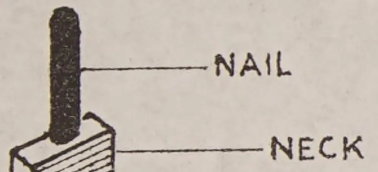
Cross-sectional drawing of a nail and neck assembly. The nail is labeled "NAIL" and the neck is labeled "NECK".
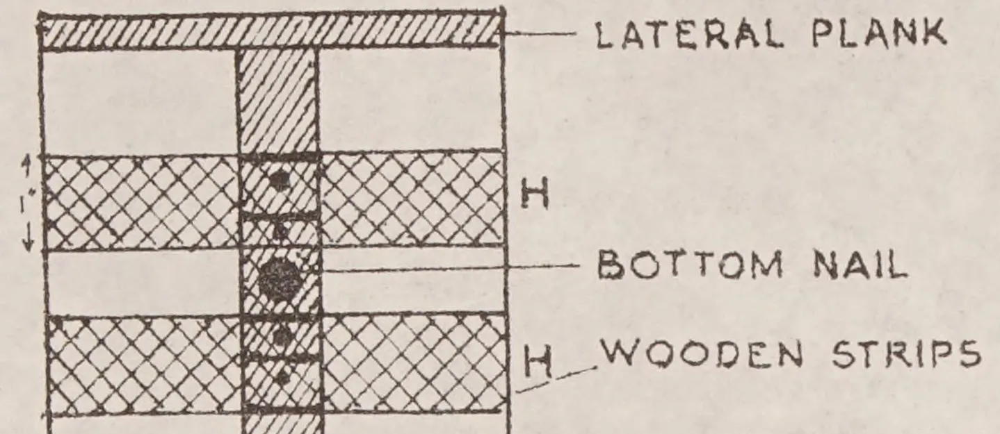
Cross-sectional drawing of a wooden structure. The top layer is labeled "LATERAL PLANK". Below it are two layers of "WOODEN STRIPS", each labeled "H". A "BOTTOM NAIL" is shown passing through the center of the structure, with a small circle representing the nail head.
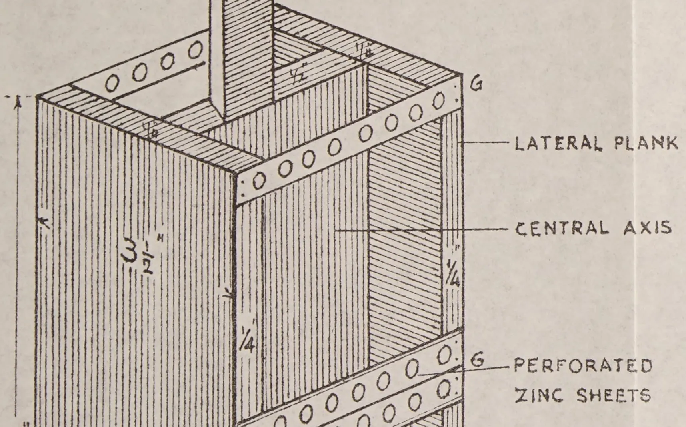
Technical drawing of a vertical structure, likely a wall or partition. The drawing shows a cross-section of a vertical panel with a central axis. The panel is constructed from vertical planks. Two horizontal perforated zinc sheets are shown, one near the top and one near the bottom, both labeled "PERFORATED ZINC SHEETS". The top sheet is labeled "G" at its right end. The vertical planks are labeled "LATERAL PLANK". The central axis is labeled "CENTRAL AXIS". Dimensions are indicated: a height of inches and a width of inch. The drawing also shows a vertical support or frame element at the top.
Technical drawing showing the bottom of a centre piece. It depicts a horizontal base labeled "LATERAL PLANK" and a vertical support labeled "BOTTOM OF CENTRE PIECE". The drawing shows the structural details of the base and the support.
FIG. V.
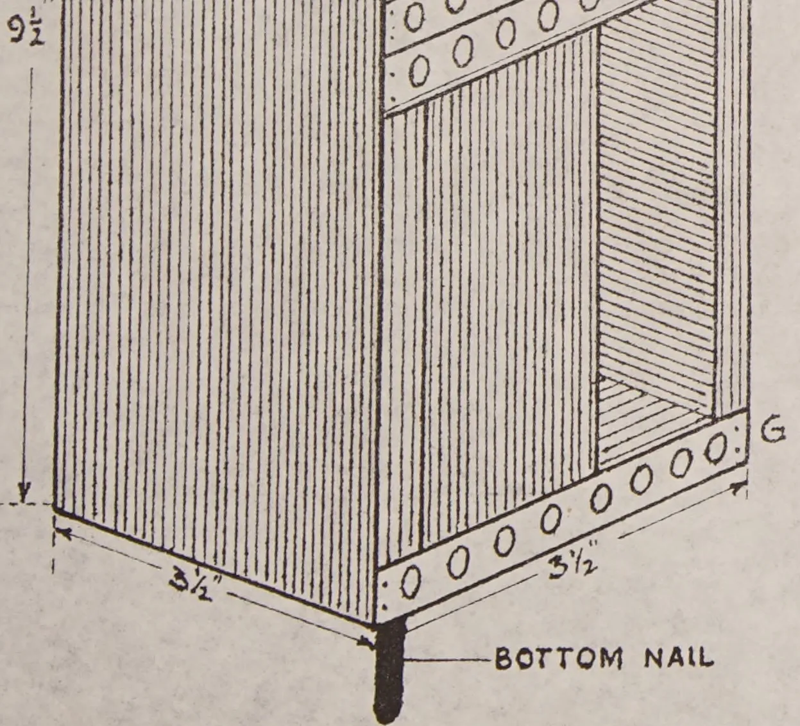
Technical drawing of a cabinet corner. The vertical side is labeled with a height of . The horizontal side is labeled with a width of ". A bottom nail is shown protruding from the bottom edge, labeled "BOTTOM NAIL". The drawing includes various hatching patterns to represent different surfaces and edges.
Fig. IV.
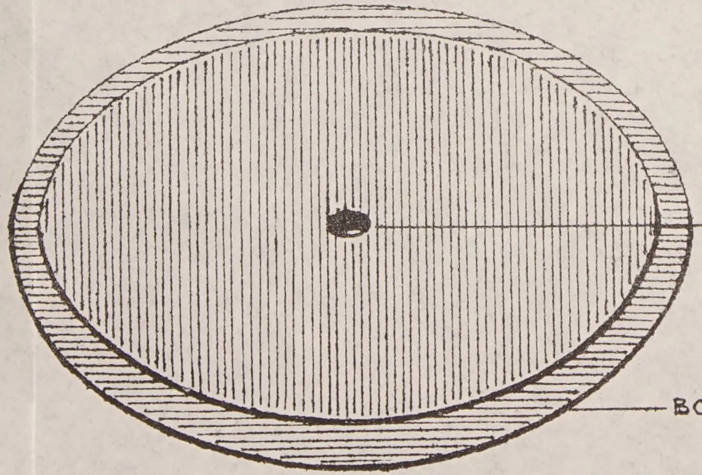
Technical drawing of a circular bottom plank. It features a central hole labeled "HOLE FOR THE RECEPTION OF BOTTOM NAIL". The plank is shown with a hatched outer ring and a solid inner circle.
HOLE FOR THE
RECEPTION OF BOTTOM NAIL
BOTTOM PLANK.
S. G. O. 4.10. 4
This image is a scan of a blank page. The background is a uniform light beige or off-white color. There are some very faint, blurry vertical and horizontal lines, likely artifacts from the scanning process or the paper's texture. A slightly more distinct horizontal line is visible near the bottom edge of the page.Fig. 1 is a perspective drawing of a bamboo pot. The pot is cylindrical with vertical bamboo slats. It has a handle at the top, a central neck with a projection, and a bottom plank. Dimensions are given: height 12 inches, diameter 6-8 inches, and neck width 1 inch. Labels include HANDLE, PROJECTION, NECK, BAMBOO POT, BOTTOM PLANK, OUTLET, and STRING.
Fig. 1
Fig. II is a side view of the bamboo pot assembly. It shows the central axis, a neck with a 1 1/2 inch width and 2 inch height, and a nail labeled F. Dimensions include 1 inch, 2 inches, 1 1/2 inches, 9 1/2 inches, and 3 1/2 inches.
Fig. II.
CENTRAL AXIS
Fig. III is a cross-section of the centre-piece. It shows a central axis, a nail, a zinc sheet, and lateral planks. Labels include LATERAL PLANK, CENTRAL AXIS, NAIL, ZINC SHEET, and LATERAL PLANK.
CROSS-SECTION OF CENTRE-PIECE
Fig. III.
133thin sheet of metal to prevent wear and tear. (Fig. IV. H.). This is not necessary if hard wood like Huri-mara is used for the bottom plank. This hole is meant to receive the bottom nail of the centre-piece. The nail should fit loosely into the hole so that the centre-piece will revolve smoothly upon it.
(c) The Revolving Centre-piece.—This is made entirely out of any hard wood. The central axis (Fig. II.) is about inches long (without the neck) and inches broad, and is made from a half-inch plank. The neck is 2 inches long and inches broad and is situated on the top edge of the central axis. (Fig. II. E.) The twine for revolving the centre-piece is coiled round the neck.
Two headless nails each inch in diameter and two inches long are driven, one, into the middle of the neck and vertically, and the other, into the bottom of the central axis, so that only one inch of the nail sticks out. (Fig. II. F.F.) The whole centre-piece revolves on these two nails.
Two lateral planks each inches long and inches broad are nailed down centrally, and at right angles to the central axis on either side. (Fig. III. Cross-section.) This will form two compartments on either side of the central axis. A piece of zinc sheet, with or without perforations, preferably the former, about one inch broad and 4 inches long is placed across, from the edge of one lateral plank to the edge of the other at the top and nailed down. Two more pieces are fixed similarly at the middle and at the bottom. (Fig. IV. G.G.G.) Three more zinc sheets are fixed likewise on the opposite side of the central axis. These sheets prevent the honey comb from breaking and also hold the comb-frame in position when extraction is in progress.
To prevent the comb-frames from slipping through the bottom when they are placed in the compartments for extraction, two strips of wood, each inches long, and inch thick and one inch broad are nailed down at the middle, parallel to the lateral plank and on each side of the bottom nail. (Fig. V. H.H.)
(d) Handle.—This consists of a strip of wood, inches thick and one inch broad and about the length of the external diameter of the bamboo container, i.e., 6 to 8 inches. (Fig. IV. K.). A small hole inch in diameter is bored in its centre for the reception of the top nail of the centre-piece. (Fig. IV. L.) The top nail should fit this hole loosely so that the centre-piece will revolve smoothly. With a view to preventing wear and tear when extraction is in progress, it is advisable to line the hole with a thin sheet of metal. This is not absolutely necessary if hard wood is used. The top portion of the handle may be of any design to suit one's fancy. The handle is fixed in position
134on the two projections of the bamboo container with screw nails so that the centre-piece may be removed with ease for cleaning.
Place the centre-piece inside the bamboo container. The bottom nail of the centre-piece should fit into the hole in the bottom plank. Hold the centre-piece centrally in the container and fix on the handle. The top nail of the centre-piece should fit loosely into the hole provided in the handle. Revolve the centre-piece to see that it does not touch the sides of the container. Fix the handle to the two projections by means of screw nails. A piece of strong twine or cord about 3 feet long is tied to the neck of the centre-piece and coiled round it. The free end of the twine is passed through the hole provided in one of the projections to which the handle is fixed. Now the extractor is ready for use.
After removing the cell-caps from the honey comb in the frames by passing a knife dipped into hot water, place the two frames one in each of the two compartments in the centre-piece. (Fig. I. M. M.). The twine is wound round the neck of the centre-piece and the free end passed through the hole in the projection. Pull the twine firmly and release immediately. This will set the centre-piece revolving at a fairly rapid speed. When it ceases to revolve, it will be noticed that all the honey from that side of the comb facing the wall of the container has been extracted by centrifugal action. Turn the comb-frames the other way round and repeat the process. All the extracted honey will flow out through the outlet in the container.
The writer wishes to record his thanks to Mr. H. A. Pieris, Agricultural Officer, North-Western Division, Wariyapola, for the encouragement given him in the preparation of this article.
135S. C. FERNANDO, B.A. (Oxon), C.C.S.
ADMINISTRATIVE SECRETARY
THE Department of Agriculture, as such, dates from 1912. Till then for nearly a century the Department of the Royal Botanic Gardens functioned virtually as an agricultural department. No other specific official organization can be traced at any period of the Island's long history. To explain this curious feature in a predominantly agricultural community some historical background is essential.
Britain was the first European Power to consolidate her rule over the whole Island, which she did from 1815 onwards. The Portuguese from mid-16th up to mid-17th and the Dutch from mid-17th up to the end of the 18th century held a rather precarious sway over the Maritime Provinces, often amounting to a little more than "garrison rule". Therefore though deeply interested in commercial export of spices like cinnamon to Europe, and at times of rice to other colonial possessions, these two Powers could leave little impression on agricultural administration; and the direction of agricultural pursuits remained fundamentally what it was under Sinhalese kings.
The ancient Village Community and the Headmen System were the two institutions that buttressed rural agriculture (the only type that mattered) for over 2,000 years, with feudal tenure as a social nexus and stimulus to cultivation. Government action was ever on the grand scale as with the magnificent irrigation works of Parakrama Bahu (1164-1197 A.D.) but details of administration were left largely to the local institutions.
"Tanks and water courses were repaired in common and combined labour collected the harvests".
It was also a time when
"Land was not the luxury of a few but the daily occupation and livelihood of the majority".
So long as Agriculture remained "subsistence" rather than "commercial" there was naturally not the same urge towards superior variety, grade or stock. Rents, dues and taxes were an adequate stimulus to cultivation. Export trade in food-stuffs no doubt existed under Sinhalese kings but the internal
136economy of the country remained one mostly of barter : there was little commercial intercourse between self-contained villages except for commodities like salt. Besides, as we see in our own day, the cultivation of paddy and the chena crop (the antiquity of which is established by pre-Sinhalese Veddah legends) required no complicated "capitalistic" organization based on a cash nexus.
Mainly under consolidated British rule, with its stimulus to coffee, tea, cocoa, coconuts and rubber, commercial agriculture began to cut through the ancient structures of society. The individual began to assert himself against hard-baked custom to join the new race for wealth. Money circulated more freely and "native" trades like the arrack business were quickly stimulated. There arose a vast social and agrarian revolution : land became aggregated in large holdings, a new agricultural rich arose, and the commercial estate came to stay. Land, in the economic sense, had become the "luxury of a few".
Very soon therefore commercial agriculture began to present its own problems in the 19th century, and in the absence of a proper Department of Agriculture the Royal Botanic Gardens at Peradeniya, (established in 1822 for a less ambitious purpose) meant far more to estate agriculture than its title would indicate, and did all the pioneer and experimental work for "economic crops". Its international reputation, fostered largely by the calibre of the research and scientific staff it was able to attract from time to time, made a separate Department of Agriculture appear almost superfluous, at least in the eyes of those interested in plantation agriculture. Indeed, published reports and other documents would indicate that but for the rising and resurgent interest in village agriculture early in the 20th century (in which Governor Blake and Mr. John Ferguson, C.M.G., played a prominent part among Europeans) the establishment of a separate department would have been much longer delayed.
1899 brought agitation to a head and a commission was appointed "to inquire into and report on the advisability of establishing a Department of Agriculture".
Various memoranda were submitted to it, most of them, curiously, eulogizing existing organizations rather than appreciating the necessity for a new department. The Government Agents also emphasized their capacity and strength to look after the peasant. Although the Commission reported in favour of a new department the project fell through and remained in abeyance for 13 years.
The explanation for the failure is understandable. The Department of the Botanic Gardens (now with subsidiary gardens at Hakgala and Heneratgoda, and several branch gardens elsewhere) had become a true epitome of a department for all forms of estate agriculture, and it seemed all the more
137an unnecessary duplication if not a superfluity to have a separate department to assist and advise plantations. At the same time some of the protagonists of village agriculture became half converted to the plea of possible superfluity in their own cause when a determined case was made on behalf of the Government Agent regime that
“the cultivator could not be raised by a department but only by the influence of the right sort of man placed in quasi-parental authority”.
To the credit of both sections however the cause of a new department did not fall without substantial result. The Department of Botanic Gardens redoubled its efforts to further justify its existence, and in 1902 the establishment of the Experiment Station at Gannoruwa was followed by the appointment of a Committee of Agricultural Experiments. Similarly under the patronage of Governor Blake the Agricultural Society was formed in 1904 to promote village agriculture.
In the wake of these efforts there grew a healthy parallel development which was to outlive for many years the actual establishment of the Department in 1912 to combine the ideals of both. The Botanic Gardens threw offshoots in the way of Entomologists, Chemists, and Mycologists (later to be absorbed in the new Department) and, preserving its original and essential features, exists to this day with the same international reputation. The Agricultural Society with a Board of Agriculture of its own as executive set up an admirable framework for village agriculture with field instructors as the backbone for Livestock, Education, Paddy Cultivation, Exhibitions, Apiculture and Sericulture. This provided the nucleus for the promotion of peasant agriculture in later days, and if this Society itself “withered away” by about 1924 it was solely because its active supporters were becoming enthusiastic non-official members on a reconstituted Board of Agriculture set up to assist the new Department in 1921.
Thus it happened that whereas the Survey Department dated from 1800, the Forest Department from 1883, and Veterinary from about 1900, the most predominant single interest of the Island contrived to be guided till 1912 by organizations, none of which in its own right could claim the exclusive title of a Department for Agriculture.
138SELECTED ARTICLESTHE BANANA*FOR a plantation site a north-easterly aspect well protected by a natural wind-break of mountains or timber on the western and southerly sides is regarded as the ideal situation. Easterly and south-easterly aspects may be used provided they also are well protected from cold winds. Too much attention cannot be given to the provision of wind-breaks. The leaves are the factories in which the plant's food is manufactured, and naturally the less they are damaged by wind or other agency the greater will be the amount of food available for the plant's use.
In the northern part of the State alluvial lands yield the best results, as growth throughout the year is even and fairly continuous.
PREPARATION OF THE LANDThe preliminary preparation of scrub land is confined to merely felling the timber at a suitable time—generally during winter—allowing it to dry for several months, and then burning off. Subsequently unburnt timber up to 12 inches in diameter is piled together and refired, the heavier logs being allowed to remain where they fell.
PLANNING AND PLANTINGIn the south planting may be proceeded with from September to early March, though usually planting before the end of December is advisable in so far that the plants get a better start before the winter and fruit in a shorter time. Opinions vary as to the best month for planting to avoid having the main bunching during the period when short fruit known as "November dumps" are thrown. No definite rule can be laid down in the matter, as much depends on conditions existing in individual districts and the situation in which the plants are to be planted. Intending growers should ascertain the experiences of other growers in the district on the matter.
The land should be marked out at distances of 12 feet by 12 feet or 10 feet by 10 feet and holes about 12 inches deep and 18 to 24 inches across dug to receive the suckers. Various distances apart at which to set the plants have been advocated, but experience has proved that distances of 6 feet by 6 feet and 8 feet by 8 feet are not successful. Though 12 inches may be regarded as a safe guide to the depth of the holes at planting, the influence of the soil drainage and local conditions have an important bearing on the matter. Obviously, for instance, it would not be advisable to dig a deep hole in a soil with a heavy clay subsoil close to the surface, whilst in deep alluvial lands 18 to 20 inches would not be too great. When planting it is not necessary to completely refill the hole. The soil will gradually work in
* Extracts from an article appearing in the Queensland Agricultural Journal, June, 1941
139during cultivation and heavy rains. For practical purposes it is sufficient if the base of the plant is covered to a depth of 6 inches. Do not use the soil which has been dug out of the hole, but break down the surface soil from around the edges with a mattock, thus providing friable soil for the young roots to start in.
Too little attention has in the past years been paid by growers to the damaging effect of soil washing in hillside plantations. It is well worth the labour expended to provide terraces as frequently as possible across the hills. These may be built up of logs or stones between the rows of plants. Growers who have adopted this practice have cut larger size bunches and have considerably extended the period of productivity of their plantations. There is no reason to doubt that the comparatively short life of Southern Queensland plantations is often due to the loss of valuable top soil by erosion. The holding of this soil on the hillside, combined with proper cultivation and fertilizing, will add several years to the present recognised profitable life of banana plantations.
Green manuring for the combined purposes of reducing soil losses during the rainy season and to provide additional humus should also be given serious consideration by growers.
Planting is carried out by means of suckers (off shoots), bits, or butts. Suckers are most generally used on account of their availability and convenience for transport. Butts are rarely used and are not recommended, as they present a ready means of transferring beetle-borer to a new plantation. Bits are portions of old butts which have been chopped into pieces—each piece having one eye or bud from which a plant will develop. Very small suckers are not desirable. In no case should they be less than 3 inches in diameter through the corm. Care should also be taken not to obtain water suckers—i.e., those which have thrown large leaves at an early age. The best suckers are those about 18 inches long, which taper from a well-developed base to a top of comparatively long, narrow, sword leaves. If such suckers have developed the first stages of full foliage and are desired as plants they should be cut off several inches above the corm after being dug. If used at a still later stage the stem should be cut off close to the corm and the centre gouged out to prevent further growth from that source. The butt will be found to contain several more or less developed buds or eyes distributed over its surface; these should also be gouged out and one only left to grow from around the base. Each plant should be carefully trimmed, the roots being cut close into their bases, and where there is any suspicion that the beetle-borer may be present the external covering should also be pared off.
Given fair conditions the young banana plant will require little attention for some time. Weed growth will sooner or later appear and should be immediately suppressed. On hillsides it is rarely possible to use horse implements, consequently hand-chipping and pulling the weeds must be resorted to. Spraying with various weedicides is practised by some growers, and with a suitable spray the practice has much to commend it provided cultivation is not altogether neglected. A plantation needs to be chipped at least
140twice a year to ensure good results. There is one feature growers should never overlook, and that is that it is not possible to grow bananas and weeds at the one time with any degree of success, particularly whilst the banana plants are young. It is of the utmost importance to suppress all weeds in the early stages of the plants' growth.
The right time to remove the unwanted suckers is when they first appear above the ground. The parent plant then does not waste energy building up suckers which have later to be destroyed.
Under average conditions the usual method has been to allow only one plant to grow for the first four months. Then allow the first follower to develop, preferably at the side. After another four months allow a second sucker to develop on the opposite side of the parent, and after a similar interval allow a third sucker to develop at the side of the first. If possible, never allow suckers to grow from the down hill side of the parent, as in a year or two, unless the soil is continually banked up around the plants, they will be growing on the top of the ground. For this reason also the suckers which are retained as followers should originate well down in the ground and not at soil level. After the third sucker has been allowed to develop allow the fourth sucker to come from the side of the second, and so on. By following this method of pruning one developed bunch only is permitted to hang on each stool at one time, and as the plant is putting its energy into the bunch it will be a good one and worth more than two or three smaller bunches. Furthermore, succeeding bunches follow in fairly regular order.
Some growers have the idea that no suckers should be removed from the parent until it has borne a bunch. Such is an entirely erroneous idea, and probably developed from the fact that suckers intended for replanting should only be taken from parents which have borne a bunch. If taken before, the suckers are soft and invariably produce a very poor first bunch.
In desuckering it is advisable to avoid injury to the roots of the parent plant as far as possible. The implement in use most favoured is the gouge made from a 3-feet piece of spring steel inch by inch. About 15 inches of one end is hammered out, and the edges turned up and sharpened. This "blade" is tapered to a point of about half-an-inch across to facilitate its entry well into the corm of the sucker after the top has been severed, whilst the sharp curved edges make it easy to cut out a cone-shaped piece of plant and prevent further growth. The top of the gouge is generally fitted with a handle of inch round iron for better leverage.
The great problem facing the banana grower is the production of first class fruit. Of recent years in many instances the sites for banana growing have shifted from the extremely fertile scrub soils to forest soils of varying fertility and aspect. The necessity of grubbing the forest soil and the use of fertilizers has considerably increased the cost of production, and unless a definite system of desuckering is carried out the production from this class of soil will not often be commercially profitable.
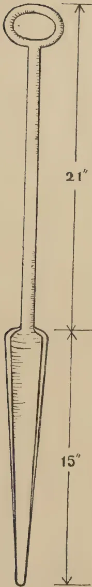
A technical line drawing of a banana desuckering gouge. The tool consists of a long, thin handle with a circular loop at the top. The handle is marked with small vertical lines. The handle is 21 inches long, as indicated by a vertical dimension line with arrows at both ends. The handle widens into a pointed, wedge-shaped head at the bottom. The head is 15 inches long, as indicated by another vertical dimension line with arrows at both ends. A small crosshair symbol is located at the junction where the handle meets the head.BANANA DESUCKERING
GOUGE.
A system of desuckering, which has been tried and proved in the Eumundi and Yandina districts and is locally known as the one-bunch one-sucker system, has as adherents, the principal growers. Growers who have carried out the system have had as much as 200 cases to the acre for the first cut off forest soil, and by the selection of the correct follower for the second and subsequent cuts have reached an average of 500 cases per acre during the life of the plantation.
The system really starts with the selection of the stock for planting, and in this connection well developed eyes with a portion of the corm adhering, and known as bits, are given first preference, and healthy suckers of more than 3 inches diameter are next best.
The bits or suckers are planted in a hole dug to a depth of about 12 inches. It is advisable not to cover the plant with more than 3 to 6 inches of soil at the time of planting, thus preventing the corm from forming too near the surface. The distance apart should not be less than 10 feet by 10 feet.
Suckers are a popular form of stock, and in placing these in the holes the followers for the second and succeeding crops can in a big percentage of cases be definitely ascertained. The side of the sucker furthest away from the parent usually produces the correct follower, and the sucker should be placed with the correct side facing the direction from which it is desired the follower should grow. On very steep slopes a follower at the side is preferred for the reason that if allowed to grow on the top side the old corm when rotting allows the young plant to sag forward, whereas if on the side the ground helps to stay it. The maiden plant must be regularly desuckered as soon as the suckers appear above the ground, this operation being most important, having, as it does, a direct influence on the size and quality of the expected bunch.
Where a grower has had experience in a certain locality, the number of months required to throw a bunch can in most cases be used as a basis in determining the time when the follower is allowed to come. From observations of quite a number of seasons and other factors in North Coast districts, a period of approximately fourteen months is the usual time taken from planting to bunching. Using this with local data, followers can be left to insure the avoidance of fruit being thrown during November, as such fruit, having been formed in the plant in the winter, is usually unprofitable.
The most important factor governing the system is the selection of the correct first follower, and although some seasons make it somewhat hard, a careful observant grower can get at least 95 per cent. correct. On examining a banana plant with a number of suckers surrounding the butt, it will be found that the majority, and in some cases the whole, of the suckers are growing from eyes or buds that are in a circle at or near the soil level. These suckers are referred to as "sitters" and when allowed to develop into matured plants are sitting more or less on the surface with a root action that is superficial. Such suckers are to be avoided as followers.
Usually after the plant has made good growth and has been regularly desuckered, it forms one or perhaps more suckers that come from buds or eyes directly below the top layer of eyes and at least 5 inches lower in the soil: these are the correct followers, and if the injunction to place the suckers the
2—J. N. A 6049 (9/41) 142correct way when planting has been carried out, by the time the bunch is thrown on the parent plant the grower will have a nice sturdy spear leaved follower of from 2 to 4 feet in height on the top or at the side according to the contour of the plantation. It is of the utmost importance that the follower is above ground when the bunch is thrown on the parent plant.
Once a grower has reached the stage of having his next year's follower correctly placed as regards position and time his main troubles are over, as it has been proved definitely that the third and succeeding correct followers, to the extent of 95 per cent., are true follows through, i.e., in a direct line with the original plant and the first follower. The straight follow-through demands that the planter must ensure that the first follower does not grow on the down hill side or towards a fixed object such as a stump or astone.
The objectives of this system are the same as are aimed for in every other line of fruit production where pruning is resorted to for definite results. A desuckered banana plant enjoys a maximum of sunlight, available food and moisture, and must, when these and other essential factors are present, produce a superior article. In addition, a one-bunch one-sucker plantation can be regularly and effectively baited for beetle and offers facility for inspection for bunchy top and other diseases.
By thrashing is meant the removal of dead leaves from around the stem of the plants. Carry out this work after the winter. The banana is a tropical plant and growing in Southern Queensland under semi-tropical conditions, the dead leaves provide a certain amount of warmth for the stem during the colder months.
143THE advantages which are likely to be obtained from the budding of seedling stocks of tung trees (Aleurites fordii and Aleurites montana) with scions from selected high yielding mother trees were discussed in an article in the last issue of The Nyasaland Tea Association Quarterly Journal (Vol. 5, No. 2, pp. 6-10). It was pointed out that there is every promise that the plantations of such buddings will yield very considerably more than those established from unselected seed, but that budding is at present only in the experimental stage and no yield figures are yet available for clones in bearing. In the present article a simple method of budding is briefly described. Other methods have been adopted quite successfully with tung in other parts of the world, and no special advantages are claimed for that described here, but it is one which has already been found to be easy and successful in Nyasaland.
The only materials required are a supply of waxed tape and a budding knife. It is not necessary to purchase a proper budding knife as any small penknife will do as long as it has a blade which will take a really keen edge right up to the point. If the work is to be done easily and efficiently it is essential that the knife should be really sharp. Prepared budding tape can be purchased from horticultural salesmen but it is cheaper to make it on the estate. Any kind of cheap calico or similar cloth is suitable for making the tape as long as it is not of too open a texture. The cheapest "grey sheeting" obtained from local stores has been found quite satisfactory. The cloth should be cut into strips about 6 or 8 inches wide by 24 inches long and the strips rolled up moderately tightly. The rolls are soaked for a few minutes in molten wax and then removed to cool, after which they can be cut across with a sharp knife at intervals of or inch, thus giving a number of waxed tapes each or inch by 24 inches long. Beeswax is suitable for waxing the tape, but it can be made much more adhesive if it is soaked in a mixture of beeswax (5 lb.), resin ( lb.), and linseed oil ( pint). This mixture should be boiled before use. Paraffin wax, either alone or mixed with a little petroleum jelly, also makes a satisfactory budding wax.
Strongly grown seedlings about one year old are best for budding, those of ideal size having a diameter of to inches at a height of 3 inches above ground level. Any size of seedling from a diameter of inch up to 4 inches can be budded but with very small or very large stocks the operation becomes
*By C. C. Webster, B.Sc., A.I.C.T.A., in Nyasaland Agricultural Quarterly Journal, Vol. 1, No. 1, January, 1941.
144more difficult owing to differences in bark thickness and curvature between stock and scion. It cannot be said at present whether it is desirable to raise stocks from selected seed but it is probable that healthy and vigorous growth is more important in a stock than any other characteristics which may be derived from the parent plant.
The selection of suitable budwood from high yielding trees is by no means an easy matter. It is desirable to obtain vigorous shoots of the previous season's growth, of over inch in diameter, and containing well developed buds. Care must be taken that shoots selected for budwood do not merely contain leaf scars with no apparent bud above them. Good budwood is often very difficult to find on trees over six years old which are bearing heavily. Pollarding, i.e., cutting back some of the strong secondary branches of the tree, will produce good strong sticks of budwood after a year's growth, but this is a rather wasteful procedure as it greatly reduces the cropping of the tree, and a better method of obtaining suitable material is by the use of multiplication nurseries which are mentioned below.
Budding may be done at any time when the bark will peel readily from both the stock and the scion, which it will do throughout the growing season between September and March. For the following reasons, however, it is best to bud as soon as possible when growth has recommenced after the dormant season :
It is advisable to insert the bud-patch well down at the base of the stock, only about an inch above ground level, as this will reduce any risk there may be of breakage by wind at the union of stock and scion. If the base of the stock is dirty with soil beaten up by rain it is as well to clean it before commencing to bud. A panel of bark is then cut on the stock by making two parallel vertical cuts, each about inches long and about an inch apart, and joining them by a horizontal cut across the top. (F in diagram). These cuts should be made down to the wood. The stock is then left for the time being and a patch of bark, containing a bud, removed from the scion or bud-stick. This bud patch, when prepared, should be slightly smaller than the panel cut on the stock. It may be prepared in two ways.
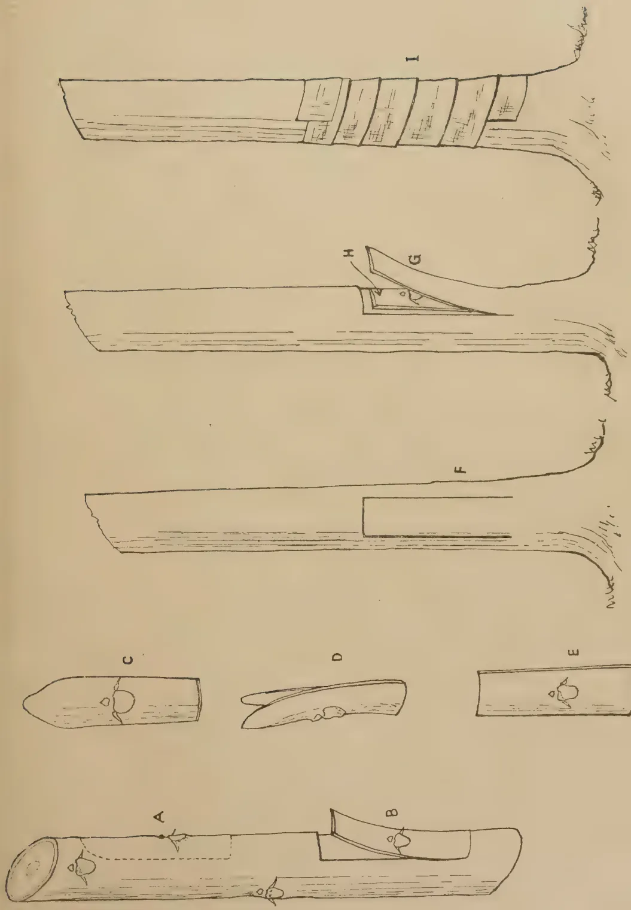
This botanical illustration depicts the budding process of tung trees. It includes several labeled diagrams:
BUDDING TUNG TREES.
This image is a scan of a blank page. The background is a uniform light beige or tan color. There are a few very small, dark specks scattered across the surface, which appear to be scanning artifacts or dust particles. No text, lines, or other graphical elements are present. 145(A in diagram). The patch of bark is then carefully loosened from the chip of wood and peeled away (C) and (D) after which it is trimmed up to a rectangular shape and to a size which will fit into the panel cut on the stock (E).
(b) Alternatively the patch of bark may be peeled directly off the bud stick without any adhering chip of wood. To do this two parallel vertical cuts are made through the bark of the stick on either side of the bud at slightly less than half an inch apart. These cuts are commenced inches above the bud and continued for the same distance below it, where they are joined by a horizontal cut. The blade of the knife is now inserted across the top of the vertical cuts, the bark gripped between the knife and the finger and the patch peeled gently downwards (B).
Having obtained the bud patch the flap of bark which has been cut on the stock is peeled downwards (G) and the bud patch inserted between the flap of bark and the wood of the stock. The flap of bark is then replaced in the position over the bud patch and binding is commenced. It should be begun with a firm turn at the bottom to hold the end of the tape and then continued spirally upward with a slight overlap. Binding should not be too tight over the middle of the bud patch, but should be finished off firmly above. The pointed end of the handle of the budding knife may then be pushed through the upper end of the tape into the bark of the stock to hold it in position.
In carrying out these operations two points must especially be remembered :
It is necessary, of course, to put the bud patch in the right way up, i.e., with the bud above the leaf scar.
After binding, the budding is left for 14 to 21 days before opening. With vigorous stock 14 days is usually long enough, but with small stocks or in very dry weather it may be advisable to leave it 3 weeks. The binding is then removed and the flap of stock bark stripped down and cut off at the bottom, when it will be found that the bud patch is firmly held to the stock by callus growth. If there is doubt as to whether the patch has "taken" a minute scratch should be made on it with the point of the knife which will show whether the tissue is green and living or brown and dead. A week or ten days after opening, the stock may be cut off with a clean sloping cut 3 or 4 inches above the bud patch in order to force the scion bud into growth. Other buds which may begin to grow out from the stock itself should, of course, be rubbed off. I have not found it necessary in Nyasaland to shade the
146buddings at any stage. After cutting the stock the cut surface may be protected with tar or white lead paint, but this again has not been found necessary. When the budding has produced a strong shoot the dead "snag" of the stock above the union may be cut off.
When establishing an area of budded trees the seedlings to be budded may either be (a) planted in their final positions in the field, allowed to grow big enough and then budded in situ, or, (b) raised and budded in a nursery and afterwards transplanted as budded stumps. When budding in situ by the method described above I have usually obtained from 97 to 100 per cent. of successful buddings, but the transplanting of budded stumps has not yet been tried, except on a very small scale, and therefore cannot confidently be recommended.
As already mentioned, it is not usually an easy matter to obtain good budwood from a high yielding tree over 6 or 8 years old : and where any quantity is required it is impossible to get it directly from the mother tree unless the latter is severely pruned and its yield of fruit consequently greatly reduced. Budwood may be readily multiplied, however, by budding on to seedling stocks in a nursery and subsequently allowing the seedling to grow in situ for a year. Such buddings will produce in a season's growth strong sticks of budwood containing anything from 25 to 50 buds each. If this shoot is then cut off and used for budding, the stump of scion left behind will again grow out and produce more budwood the following year. Seedlings for budding in a multiplication nursery should preferably be planted from 3 to 5 feet apart, and good treatment in the way of cultivation and manuring will, of course, increase the amount of budwood produced.
147FRUIT grown on trees exposed to the wind is often found to be scarred, resulting from bruises caused by their rubbing together or against the branches of the trees. While it is impossible to eliminate entirely injury of this nature, the establishment of wind-breaks will be found to reduce the losses in great measure.
Injury often results from the carelessness of labourers in the field and from lack of supervision. The inadvertent stroke of the cutlass is at once obvious, but the considerable damage caused by the workmen and supervisors rubbing against the fruit during its period of growth, which is the cause of permanent disfigurement, is not evident until later. Great care should therefore be taken that rubbing against the tree is avoided from the time it begins to flower.
" Russetting " is a common form of disfigurement of oranges and grapefruit in Trinidad and is a major cause of rejection of fruit intended for export. Russet fruit may show discolouration of several different kinds. The most usual is a more or less uniform browning at the rind, over the whole or part of its surface; the colour of the stain, however, may vary from grey, through various shades of brown, to almost black. In some cases, the injury takes the form of " tear staining ", when the stain runs in conspicuous streaks down the fruit. Russetting of citrus fruit cannot be removed by washing and polishing and must therefore be prevented by proper treatment in the field.
The cause of this injury is an extremely small mite, practically invisible to the naked eye, but plainly discernible with the aid of a hand magnifier of medium power: it is of an elongated oval shape and pale yellow in colour. The period of development is short, adults developing in about 10 days after the eggs are laid. On this account, a very few mites can give rise to enormous populations in the space of a few weeks when conditions are favourable for their reproduction, which is greatest during periods of dry weather.
Russetting of fruit takes place as a consequence of the feeding activities of the mites. They feed upon the oil in the rind of green fruit and in the surface of the leaves; the discolouration of the fruit is due to the drying up of the external cells and to the presence of oil on the rind, which becomes dark brown on exposure to the air.
* By A. Pickles and F. M. Bain in the Proceedings of the Agricultural Society of Trinidad and Tobago for the quarter ending December, 1940.
148Although the fruit is most unattractive in appearance, the edible properties are not usually affected by russetting, but sometimes the fruit is rendered dry and spongy. Leaves which are affected by the mite lose their gloss and become slightly curled, but this effect is not serious. The presence of a large population of mites on the leaves, however, is certain to lead to attack of the fruits in due course.
Discolouration of citrus fruit by rust mite can only be avoided by spraying or dusting the trees in the field at the correct time. Plantations, where the trouble is known to occur, should be examined towards the end of the dry before the main flowering occurs and, if numerous mites are discovered, the trees should be sprayed or dusted according to the directions given below, just after the fruit is set. When the fruit is already discoloured, no treatment is of any avail. The trees should be examined again at intervals until the fruit begins to colour and spraying or dusting should be repeated if the mites again become numerous.
Rust mite is readily controlled by spraying or dusting with one or other of the sulphur preparations described below.
Dusting with finely powdered sulphur is the cheapest method of control but, as the equipment necessary is rather expensive in first cost, this method is one for the large producer. Specially prepared dusting sulphur, very finely pulverized, should be applied to the trees with a dusting machine which may be operated by hand or power. According to size and mode of operation, such machine may cost from about twenty dollars to four or five hundred dollars. Dusting sulphur costs about 3¢ per lb. in Trinidad and a fully grown grapefruit tree will require an application of about half a pound. Treatment with a small motor-driven machine at St. Augustine Experiment Station costs about 2½¢ per tree for labour, materials and depreciation.
Lime-Sulphur spray is more of general utility to the citrus grower than sulphur dust, as it may be used for the control of a number of pests and diseases besides rust mite. It is more expensive in use than sulphur dust, however, and is troublesome to prepare. Full direction for its home manufacture may be obtained on application to the Department of Agriculture. Probably most planters would prefer to purchase ready-made lime sulphur, of which there are several reliable brands available. It is usually effective against rust mites when diluted with 80 to 100 parts of water. When used against other pests and diseases, the directions furnished by the makers should be followed.
Fully grown grapefruit trees require from 3 to 5 gallons of spray for complete coverage. The concentrated preparation may be obtained for a cost of about 80¢ per gallon and the total cost of spraying amounts to between 4¢ and 6¢ per tree, depending upon the size of the trees and the availability of a water supply.
149(c) Wettable Sulphur.
Ordinary pulverized sulphur will not mix with water, but commercial preparations are available consisting of finely powdered sulphur incorporated with wetting agents. Such preparations are known as "wetable sulphur" and cost rather more than dusting sulphur. Wettable sulphur may be mixed with water and sprayed on to the trees but, more generally, the sulphur is used in conjunction with Bordeaux Mixture when spraying is also practised for scab control, or with oil emulsion when scale insects require attention (see below). Whatever liquid is used, five pounds of wettable sulphur should be added to forty gallons.
Sooty mould is a black fungoid coating of the leaves and fruit. The fungus forms a "skin" dull black in colour when dry.
This affection of citrus fruit is a symptom, rather than a disease in itself and is only present when scale insects, mealy bugs, white flies, aphides or similar insects infest the tree. Such insects secrete a sweet fluid known as "honey dew" which, incidentally, is highly attractive to ants, and it is on this fluid that the sooty mould develops.
The presence of sooty mould definitely indicates that the tree is being seriously affected by scales, &c. Sooty mould itself is directly harmful to the trees; the coating over the leaves prevents the access of light and thus results in retarded growth, light flowering and reduced power to resist drought conditions; the fruit of affected trees is often smaller in size, definitely dirty in appearance and is more likely to decay in storage than in normal fruit.
Since fruit affected by sooty mould is particularly unattractive in appearance, it should be washed before being sent to a local market. Prevention and control in the field depend upon the eradication of scales and other insects which are responsible for the condition. This is best attained by spraying with an oil emulsion or with lime-sulphur. Recent work in the United States indicates that dusting with sulphur in the field removes sooty mould from leaves and fruit to a large extent and also tends to prevent or to delay its re-appearance. Whenever possible, however, control of the insects responsible is to be recommended.
Corky or scaly disfigurements of the rind of citrus fruits arise from a variety of causes, but the most serious injury of this description arises from a well defined group of fungus disease, of which the scab of sour orange is a familiar example. Disease closely allied to sour orange scab occur on king orange and grapefruit, causing serious disfigurement of the fruit and foliage. There is little evidence to show that the injuries to fruit and leaves impair the general health of the tree, but infected fruit is often so badly misshapen and scarred that it is useless for market.
150Spraying for the control of grapefruit scab is necessary, not only to save as much of the crop as possible, but also to restrict the spread of the disease. Experience in Trinidad and elsewhere indicates that a good measure of control of the disease can be obtained by spraying the trees with Bordeaux Mixture or with lime-sulphur. The former is generally found to be more effective, but is unfortunately often followed by an attack of scale insects.
For the control of scab, two applications of Bordeaux Mixture, or one of lime-sulphur and one of Bordeaux Mixture are to be recommended. The first application should be made about the end of April. The second application is to be made when the principal blossom flush appears; this is usually in June or July.
Scab, rust mite and scale can be controlled by combining Bordeaux Mixture with wettable sulphur or with oil emulsion.
For scab control, lime-sulphur should be used in greater concentration than when used against rust mite alone. Dilution of stock solution with 50 parts of water appears to be satisfactory.
The method of preparing Bordeaux Mixture is as follows:—
| Copper sulphate | .. | .. | .. | 4 lb. |
| Temper lime | .. | .. | .. | 4 lb. |
| Water | .. | .. | .. | 40 gallons |
Slake the lime in a wooden tub by moistening it from time to time with a little water. Meanwhile, tie up the copper sulphate in a cloth bag and suspend it over 10 to 20 gallons of water in a second barrel, so that the bag just touches the water. When the lime is slaked and the copper sulphate is dissolved, stir the lime up with the remaining water and pour into it the copper sulphate solution, with constant stirring.
A large proportion of the citrus fruit received at the packing shed is disfigured by scale insects. Excessive injury by them is usually an indication that the trees are too much exposed to the wind. Injury frequently occurs where two fruits touch in the bunch on the tree. More serious attack sometimes occurs when fruit remains on the tree for a considerable time after ripening, resulting in disfigured fruit with a coarse rind and dry interior.
Most of the fruit produced in the Colony would undoubtedly benefit from an application of oil emulsion or lime sulphur to reduce scale damage, and the plantations should be inspected periodically and the necessary work undertaken if the attack of scales is at all heavy.
It is confidently hoped that all growers will co-operate in an effort to produce clean fruit, both for the local and export markets. It is a matter of financial importance to the individual grower and one upon which the successful future of the orange and grapefruit industry may largely depend.
151EVERYONE engaged in poultry farming is confronted with the problem of raising young stock. The pivot point on which the success of the poultry farmer turns is his ability to renew the laying flock satisfactorily each year. The profitable period of a fowl's life is so short that it is necessary to raise stock for the laying pens every year, and the beginner finds this to be the most difficult part of the whole business, while success in this direction is most important. It is attained only by the intelligent application of correct methods. If the incubation, brooding and rearing of chickens are not carried out under such conditions as will produce and maintain both growth and good constitutional qualities the mature stock will fail to produce or earn more than a nominal profit. A set-back during the life of the chicks may adversely affect their stamina, and the progeny of such stock, if raised under similar conditions, will be less valuable than the parents. With such deterioration the flock, would become unprofitable in two or three generations. On the other hand chicks from good stock, if given intelligent care and surrounded with the essentials required for proper growth and robust development, would mature into poultry capable of returning to their owner the last farthing in payment for the food and accommodation provided. Good methods and well grown mature stock increase the productive efficiency of succeeding generations and successful poultry farming is appreciably maintained.
The chick hatched for the market must make rapid gains. To do this in the shortest time assures the greatest profit, and the conditions and methods of rearing in some respects are artificial. The chick destined for the laying house, however, must be allowed to grow steadily without any set-back and more natural conditions might be approximated with a view to raising stock robust in constitution. The young birds will then withstand the strain of consistent egg production, which is necessary to produce the results that counts.
The building up of a strain of fowls involves something more important than the selection of standard requirements or prolific egg production, namely, breeding for health and constitutional fitness. Those who are successful in the business on a large scale have learned by experience that it pays to select only healthy vigorous stock for breeding. Unless inherent these qualities are less likely to be transmitted to the chicks, whereas constitutional defects may be reflected in several generations, with a tendency to increase rather than lessen in a given strain. The breeding stock should be sound in health and not too closely inbred.
* By H. G. Wheeldon, Poultry Officer, in The Rhodesia Agricultural Journal, September, 1941.
152The Breeding Stock.—Select the breeding stock for health and constitutional qualities, then for desired qualities in other respects. Choose only the best for the breeding pens, even if a few birds only are used, and pen them with a view to off-setting minor physical defects by mating birds that are strong where the others show weakness. When the individual birds have been selected and penned according to ancestry, then house, manage and feed them with a view to maintaining health and profitable returns. Their requirements must be met and regular supervision is necessary. A comfortable shelter when needed from the rays of the sun and during wet weather; a fair variety of wholesome food; clean drinking water; always a liberal supply of green food, and suitably ventilated houses without draughts are the important essentials.
It is not sufficient to exercise reasonable care with the breeding stock alone, the careful handling of the eggs before incubation, during incubation, and the management of the chicks to maturity are of equal importance. It is upon the common sense application of their requirements that the success of commercial poultry production depends. Lack of stamina is often the result of in-breeding, overcrowded quarters and unsuitable rations which undermine the constitution of chickens.
Assuming then that the breeding birds have been carefully selected, well housed and supplied with their normal requirements, the next point of importance is the proper care of the eggs for incubation; this is where many poultry farmers unconsciously go wrong. Careless methods of handling and storage of the eggs for incubation and during incubation impairs the hatchability. Probably more chicks are found dead in shell or are weakly after hatching as the result of wrong methods of handling them than from any other cause.
Eggs for Hatching.—Eggs intended for the incubator should be gathered once daily in cool weather and twice during the hot weather. Renew the nesting material often, handle the eggs with clean hands, place them in a clean receptacle, and keep them in a rack with small end downward, or if they are stored on their side, turn the eggs daily. Avoid excessive evaporation of the contents of the eggs by covering them with a cloth. The room in which they are kept should be fresh and cool, a temperature of about 60° F. is desirable. Wherever possible they should be used for incubation before they are ten days old, as the germ weakens with age. Prolonged exposure of the eggs to the temperature of 80° or 90°, or frequent warming and cooling before incubation, may destroy the germ or will surely result in a weak chick. Select only the best eggs for incubation. Uniformity in size, shape and shell texture are important and they should not be less than 2 oz. or above 2½ oz. in weight.
Artificial Incubation.—Artificial incubation may account for considerable losses, because the hatchability of eggs is so easily affected by machines carelessly operated or handled without sufficient knowledge of the work. It should be mentioned that with the modern systems of incubation good results are invariably obtained if the machines are managed with due care. There are various types and makes of incubators, such as moisture or tank machines and those embodying the hot air principle, each of which gives satisfactory results. Mammoth coal burning machines are available, and cabinet incubators embodying similar principles more recently introduced are heated
153either by blue flame or electricity. It is necessary to understand thoroughly the operation and conditions most suitable for these incubators by following the printed instructions accompanying each machine.
In choosing an incubator be sure of obtaining one of sufficient capacity to meet requirements. It is much better during the initial stages to incubate fewer eggs in a machine with reasonable greater capacity than to have a surplus of good eggs for hatching with only a limited incubation capacity. There are disadvantages also in extending the incubation season over a period of several months for the renewal of the laying flock. Adequate incubator capacity would ensure a given number of chicks over a shorter period.
Incubation may be successfully carried out throughout the year, especially when ducklings and chickens are intended for table purposes. The most seasonable and profitable period for hatching chicks of the heavy and light breeds for the laying flock is during May to August.
The most important point to consider in providing suitable conditions for incubation are uniform temperature, adequate moisture and ventilation in the room and freedom from excessive vibration. It is important that the incubator be level on a solid foundation or platform and the room suitably ventilated and controlled to provide a steady replacement of the atmosphere without excessive draughts. Strong currents of air may be controlled in windy weather by inserting hessian covered frames in the open spaces provided for ventilation. The small type of incubator should be placed about one foot from the wall of the room.
After studying the instructions carefully and having set up the incubator under proper conditions, it should be operated without eggs for a few days, to become thoroughly acquainted with the details and adjustment to the regulating device. An even temperature of 102° to 103° in the egg chamber is required during the early stages of the incubation. The thermometers should be tested annually to make sure they are in order before incubation commences. The chief requirements in successful incubation are uniformity of temperature with adequate moisture and ventilation. It is advisable to fumigate the egg chamber with formalin after each hatch.
The possibility of disease during incubation can be minimized by fumigation of the egg chambers which is a desirable precaution also in the case of purchasing secondhand machines. For fumigation the ventilators should be plugged or strips of paper pasted over them, wet the interior of the compartments with water and then insert a saucer or shallow tin containing permanganate of potash crystals with double the amount of commercial formalin poured over the crystals; 1 oz. formalin to oz. permanganate of potash would be sufficient for every 5 cubic feet internal measurements, close the machine and maintain its operating temperature for a few hours. After fumigation leave the machine open to air before placing in the eggs.
Having fumigated and thoroughly mastered the operation of the machine, and maintained a uniform temperature in the empty incubator, fill the trays. The eggs should be left for several hours to warm up when the temperature will automatically rise to about 103°. After 24 hours the eggs should be turned and aired, and this should be done at regular intervals throughout the period of incubation.
154There are no infallible rules for operating an incubator. The amount of moisture and ventilation required, the manner of turning and cooling the eggs and other details cannot be definitely stated for all machines. These are subject to variation according to the type of incubator and climatic conditions. The mammoth machines and some of the smaller incubators are equipped with a turning device and printed instructions for their operation accompany each machine. The usual method of turning eggs by hand in small incubators is to remove the eggs in the centre of the tray to the side or end of the rows, and gently roll these at the sides to the centre of the tray. This method may be adopted for turning and cooling the eggs in the morning, but in the evening give each egg a quarter or half turn, then close the drawer without cooling them. As to the length of time the eggs might be left to cool, no hard and fast rule can be given, this must be left to the discretion of the operator. In hot weather, however, when the temperature of the incubator and the room tends to rise, the eggs may be cooled from five to fifteen minutes longer than under ordinary conditions, remembering always that during the last week of incubation eggs also require more air than they do during the first ten days. Under ordinary conditions the eggs are aired and cooled during the early stages of incubation sufficiently to give best results while they are being turned. A point of great importance is to turn the flame of the lamp very low during the time the eggs are being cooled. The embryo chick generates animal heat as soon as it commences to develop and the volume of warmth increases steadily during the period of incubation. This is the reason why the temperature usually rises during the last week or ten days, and it may be necessary to reduce the flame of the lamp very considerably or to readjust very carefully the regulator during this period. It is inadvisable to tamper with the regulating device during the hatch, but it must be done if after lowering the flame the temperature tends to rise above 105° F.
The normal periods of incubation are as follows :—Fowls, 21 days ; domestic ducks, 28 days ; muscovy, 35 days ; geese, 28 days ; turkey, 30 days ; guinea fowl, 26 days ; English pheasant, 26 days.
The eggs may be tested twice during the period of incubation, the first test on the seventh day and the second on the fourteenth day. At the first test remove all infertile eggs, broken yolks and dead germs. Mark those which may be doubtful and continue to incubate them until the second test. If they do not develop further by that time they should be removed, as well as all the other dead and weak germs and addled eggs. Turning of the eggs should be discontinued on the morning of the twentieth day or sooner if the chicks begin to hatch. On the morning of the twenty-first day gently remove empty shells and place the hatched chicks in the drying box, or as provided in some machines in the nursery trays, and allow them to dry off for twenty-four or thirty-six hours, when the chicks should be removed to the brooders. The brooders should be thoroughly cleaned and littered with grass. Fireless or cold brooders should be placed with the chicks in a sheltered sunny locality, taking care to provide shade when required. From this stage until a few days old the chicks will require frequent attention, and it is important to avoid excessive exposure during the early morning and evening to avoid chilling. The activities of the chicks will indicate plainer than words whether they are comfortable or not.
155If crowding together and chirping, their usual requirement is warmth. Close observation and careful management will ensure good growth to marketable age or maturity of a large percentage of the chicks placed in the brooders after hatching.
Artificial Brooding.—Artificial brooding is comparatively simple when the requirements are thoroughly understood. Although constant attention and observation are necessary, any system other than artificial brooding in the case of chicks hatched and raised on a commercial basis would be too laborious and out of the question. The main object is to provide facilities for protection and to keep the chicks warm and comfortable during the early stages after hatching. They should be kept under control and provided with conditions to encourage good health and robust development. The care and attention given to chicks during the first few days, the critical period of their life, determines to a great extent their future value. The most satisfactory and economical types of brooders are generally those that are portable.
There are two types of artificial brooders, both of which have proved satisfactory and adaptable to the requirements of the poultry farmer for brooding chicks in either small or large units. They are the fireless or cold brooder (a misnomer) and heated brooders; the greatest essentials being efficiency, convenience, economy and safety.
Fireless Brooders.—The drawback with most brooding systems is the cost. The need of an efficient, convenient and economical means of brooding chicks in small units is a matter of importance to many poultry keepers, and for this purpose the fireless or cold-brooder is advocated. The outdoor colony brooder is easy to construct and handle. It affords the necessary protection from vermin and can be moved to fresh ground as often as may be necessary. The capacity of this brooder provides for 50 chicks without artificial heating. This system has been practised for a considerable number of years with satisfactory results in this Colony. Heated brooders are not necessary for brooding chicks in small units in warm localities. Suitable arrangements could be made to equip this brooder with a temporary heating device in the case of emergency when the chicks are to be removed from the incubator during a spell of cold cloudy weather. This requires careful attention, however, to avoid overheating the chicks and heating devices are not generally necessary.
The brooder must be thoroughly clean and the floor littered with grass or straw. The interior of the brooder chamber should be thickly lined with long grass on all sides to provide a fairly deep nest in which to brood the newly hatched chicks on removal from the incubators and at night. The hessian covered frame or hover is placed over the nest and pressed down to about one or two inches above the chicks in the nest. As the chicks require more room and ventilation so the nesting material should be reduced until only sufficient grass is left to round off the corners and support for the hover. The hover can be raised in this way as the chicks increase in size and finally removed when they are reasonably well feathered. This hardens them off before their transfer from the brooder at five to six weeks of age.
The chicks should be confined to the hover section most of the time during the first day or two, especially if the weather is unfavourable, the position of
156the brooder should be adjusted periodically so as to admit the sun to the interior of the brooder all day if possible. From the third day they can be confined to the exercising apartment to a greater extent with access to the brood chamber as they require it and later allowed in the attached wire run. During the first two or three days when the chickens are confined to the hover section it must be lifted several times a day at regular intervals for feeding the chicks, but the chicks must be replaced under the hover after feeding before they become chilled. By frequent handling in this manner the chicks soon learn what is required of them, and may soon be trusted to take care of themselves when they require warmth. If they show any disposition to crowd or huddle together outside the brooder chamber at any time, place them under the hover to warm up. When they are a week old they may be allowed access to the wire run. A covering on top of the run is necessary for shade in the absence of shade from trees. Not more than fifty chicks should be placed in this type of brooder, as it is considered the maximum limit of safety. Care must be taken to keep the chicks warm and comfortable at all times, and to provide ample ventilation for them at night. Overcrowding under the hover with insufficient ventilation, especially at night, will definitely impair the vitality of the chicks and will lead to respiratory troubles, stunted growth and mortality. Overcrowding is as harmful as supplying unsatisfactory rations.
The chicks should be given the opportunity of exercising in quarters that are not too cramped. They should be provided with sufficient hopper space to allow easy access to the food and water at all times during the day. Sun and air the hover compartment daily when not in use, as well as the litter. The litter should be renewed as often as may be necessary, generally twice a week.
Heated Brooders.—Of the many types of heated brooders the oil burning, electrically heated and battery systems are probably the most commonly used, and to a less extent the hot water pipe system. There is also the flue system and coal burning brooder stoves for heating the entire apartment for brooding chicks. All these methods of providing warmth are giving satisfactory results. Heated brooders and apartments must be suitably ventilated.
They are as a rule centrally heated and in the case of brooder stoves the heat generated is greater than the chicks require. The room must be large enough to provide sufficient floor space to allow the chicks to regulate for themselves the distance from the heater or degree of warmth they require. The room should not be allowed to become stuffy and oppressive during the day through lack of ventilation. Such brooder apartments should be provided with facilities for ample ventilation during the day and to a less extent at night. The zones of heat varying in temperature on the floor level at night enable the chicks to choose the temperature most comfortable to them by spreading out on the floor of the room. The room temperature for battery brooders on a large scale may be automatically regulated and controlled.
The oil burning, electrically heated and hot water systems are generally adaptable to the hover or box and canopy design of brooder. They provide a minimum heating capacity to keep newly-hatched chicks warm and comfortable and are more practicable and economical for brooding chicks in units of moderate size. They meet, with practically no exception, all the requirements
157laid down for satisfactory brooding and may be placed in any convenient building or in a brooder house designed and equipped for that purpose. Where brooding is undertaken on a large scale with heated brooders a special brooder house is necessary, which must be designed to fulfil the requirements of the heating system to be adopted.
Brooder House.—There are three types of brooder houses generally used for the successful rearing of chickens. They are :—
1. Colony brooder houses installed with a portable heating system should be made as large as can be moved conveniently. A house 10 ft. by 12 ft. should be the minimum for units of 300 chicks. A suitable size for units up to 500 chicks would be 14 ft. by 16 ft. A lean-to roof at least 6 ft. 6 in. in front and 5 ft. at the back should suit a house 12 ft. deep, and an uneven span or apex type of roof would be more satisfactory for a house which is 16 ft. deep, the height of the walls being 6 ft. and the roof at the apex 7 ft. 6 in. The house consists of a wooden frame with water-tight roof. The sides, back and front should be covered with wire netting, attached to the inside of the framework. The back wall and lower part of the sides and front should consist of some light weather-proof material, such as galvanized sheet iron, malthoid or rubberoid, &c. This should be 3 ft. high on the sides and front wall. The openings above this may be fitted with hinged wooden frames covered with fine hessian, hinged at the bottom to swing down on the outside of the house. These shutters may be closed for protection when necessary or opened for ventilation and to admit sunshine as may be required.
2. A brooder house constructed of bricks for built-in or portable heating systems should be 12 feet deep with a passage 3 feet wide along the interior of the back wall. The house should be subdivided by wire netting partitions 6 feet apart for units of 100 young chicks and subdivided into larger sections when the brooding of larger chicks is intended. A northern aspect is preferable. Outdoor wire runs should be provided to coincide with the internal subdivisions of the house. An open fronted house of this type can be operated successfully in some localities, but provision should be made to minimise ground draughts by solid dwarf partitions 12 inches high and with hinged cloth covered frames for closing the open front when desirable in cold weather. In cold climates the front of the house should be enclosed with glass windows to afford the protection necessary. In planning a brooder house, consideration must be given to convenience in attending to the chicks, inspecting the hovers, feeding and watering, disinfecting and cleaning.
3. For brooding chicks in large individual units proper facilities are required which entail the provision of equipment most suitable for this purpose. The types available would be heated battery brooders, and the canopy type of brooder stoves, or a combination of battery brooder with other systems deserve consideration. Battery brooders are compact and may be housed in almost any convenient room. A room suitable for a canopy coal burning
158stove with a capacity for 1,200 chicks would be 25 or 30 feet long and 15 or 18 feet deep respectively, suitably enclosed in front. Runs at the back and front of the house should be provided for alternate use and with four exits or trapdoors in the walls to each run.
A system of battery brooding for large numbers of chicks immediately after hatching combined with other heated systems such as may be in existence, to be used for the chickens as they become stronger, would be of considerable advantage. Battery brooders electrically heated are reliable, economical in fuel and easy to operate. They are extremely useful during the early stages up to three weeks of age from hatching. They facilitate the safe handling of chickens in large numbers during their early life when the conditions required by them are definitely more exacting. As the chicks become stronger they are better able to fend for themselves and withstand the conditions on being transferred to the brooder houses such as those equipped with other heating devices in which the subdivision of chicks in smaller units is practised.
Ventilation and Temperatures.—The importance of adequate ventilation in the brooder house and brooders cannot be too strongly emphasized. Adequate ventilation of the brooder house itself does not necessarily ensure sufficient ventilation under the hovers, these must be provided with facilities to permit a free circulation of air.
With heated brooders the temperature is another important factor. Insufficient warmth induces crowding and is harmful; over-heating, due to lack of ventilation, causes sweating, resulting in respiratory troubles, which impair the vitality of the stock. These conditions are particularly observed under hovers equipped with strips of cloth or curtains that hang close to the floor and which restrict the circulation of air. When used the end of the cloth should be at least 2 inches from the floor. In operating such brooders additional ventilation and a reduction in the temperature as the chicks grow older must not be over-looked. At the start the temperature in the brooders should be 90° to 95°, and this should be gradually reduced to 65° at the end of the second week. Later the chicks should be brooded without artificial heat for a time before transferring them to outside quarters.
Brooder Management.—The brooder should be ready for the chicks at least two or three days before the chicks arrive. If it is a new brooder with regulating device make sure it is properly adjusted and that it works freely. The capacity of the brooder should not be exceeded. When too many chicks are brooded together proper control of the young stock and access to the food hoppers is not always possible. Do not attempt to brood chicks of different ages in the same flock under the same hover. The brooder house floor should be lightly covered with coarse clean sand for large heated brooders and only a section of the floor of the room partitioned off with boarding in which to place scratching litter such as chaff or cut grass to a depth of 2 inches.
With heated brooders the liberty of the chicks should be first restricted confining them within a reasonable radius from the hover by a temporary wire netting screen for the first few days. Advantage should be taken during this period to train the chicks to return independently to the hover for the warmth and protection they require. They will soon learn to take cover;
159and as they become older and more independent they should be given more room to exercise, and after the end of the first week the whole of the floor space should be accessible to them. At this stage the chicks may be allowed out into the outside runs of the brooder house during fine weather. Observation is necessary on the first occasion, as they may not be able to find their way back into the brooder house. Sanitation and cleanliness under the hover and in the brooder house are very essential for health and the sturdy development of young stock. The brooder compartments should be thoroughly cleaned and disinfected after the removal of chickens.
Chickens at 5-6 weeks old are generally well feathered and they should be removed either to outside coops confined in pens, or reared under the colony system. On transferring them to their new quarters they will require some attention for several evenings to accustom them to their new surroundings. This attention would be amply repaid and is necessary to obviate overcrowding and possible mortality. They should be accommodated in units of 50 or a maximum of 100 chicks and separated according to sex. Perches are not necessary at this stage, but the floor of the house should be well littered and the corners rounded off with grass, or preferably with wire netting, to prevent corner crowding. As the chickens develop the accommodation should be increased or the number of chicks reduced according to the size of the coops in which they are accommodated.
Feeding.—The proper feeding and management of the young stock determines to a great extent their future value as breeders and layers.
Growing birds want variety, if for no other reason than to maintain their appetite, and there must be no stinting of food, although waste must be avoided. There is an axiom in the management of stock that the “feeding must be above the breeding” if improvement is to be obtained. While it is true that improved results would be secured by sound methods of feeding, it is equally true that still better results would be obtained by having the stock properly bred and properly fed. In this way the greatest return would be derived from a given amount of food.
The object of the poultry breeder to-day is to economise in almost every branch of his business, but there is one place where stinting is false economy, and that is in the supply of food. It is much better to hatch fewer birds and feed them well within one's means than try and raise a large number that may be under-nourished.
The successful feeding of chicks is not a difficult problem provided they are supplied with their natural requirements. Almost any wholesome nitrogenous ration made up of grain and grain by-products, green food and animal food given regularly is what they require in the way of food and they must always have access to clean water and grit.
The chicks will be ready for their first food 36 to 48 hours after hatching. It is necessary to bear in mind that the newly hatched chick, by absorption of the yolk of the egg just prior to emerging from the shell, has been provided by nature with sustenance for the first 48 hours after hatching. Feeding, therefore, too soon after hatching, is not only unnecessary but undesirable and may prove harmful.
160The food should be given preferably when they have been removed from the incubator to the brooder. They should be provided with shallow vessels each containing dry mash, water and a little grit. Two or three pieces of straw may be allowed to float on the surface of the water, which the chicks will peck at, and soon learn to drink. At frequent intervals during the first two days their attention should be drawn to the food, either by tapping the food with the forefinger or by taking a pinch of the mash between the fingers and allowing it to sift down from a few inches above the food tray. By these simple means chicks can be taught to eat and will soon learn to care for themselves. A small quantity of pinhead oatmeal may be given twice a day as an additional feed during the morning and evening. From the third day a little munga or commercial chick food may be given in conjunction with the dry mash, substituting the oatmeal and feed at frequent and regular intervals during the course of the day.
The best results are obtained by the dry mash system of feeding, either combined with grain or fed as an "all-mash" ration without the use of grain. An all-mash ration simplifies feeding and the stock make greater gains in weight as a rule; when it is desired to feed grain with dry mash it can be done by substituting grain for portion of maize meal.
When the feeding of moist food is adopted, the mash should be mixed to a crumbly consistency with separated milk or warm water, and the chicks given only sufficient to be consumed in half an hour. The food left over after that time should be removed until the next feed. Moist mash may be fed in conjunction with dry mash as a regular system in the rearing of table birds. For stock that are intended for the laying and breeding pens, however, the mash in a moist state should be regarded as supplementary, especially for late hatched chicks and chicks that have gone off their feed or flagging. A moist mash as a change stimulates the appetite and encourages a greater consumption of food and maintains good growth and development. Grit and water are necessary at all times, and finely cut tender green vegetation must be given daily. Bone meal, lime and salt as a mineral mixture may be incorporated in the mash for all ages of growing stock. Separated milk, when available, is a desirable addition given either mixed with mash as a moist food or the curd given in separate receptacles. It is better to give the curd after draining off the whey when milk is supplied separately.
The grain mixture or munga should be fed in loose litter, which will induce the chicks to exercise by scratching for it. Feed the grains four times a day in small quantities at regular intervals for young chicks. As the chicks grow older accustom them to a larger range or run, placed with the brooder on grass covered ground. The site which has been set aside should be planted preferably with a permanent grass such as couch. This serves to sweeten the land during the off season and furnishes green pickings for the chicks and two or three cutting of grass of desirable length during the rainy season for use in the brooders.
When the chicks are eight weeks old give them a mixture of larger grain, such as cracked wheat or crushed mealies mixed with munga and small sunflower seed. By the time the chicks are six to eight weeks old the principal
161dangers of chickenhood are past, and at this stage they may be removed or weaned from the brooder to suitable coops. The rearing can be continued in wire runs or by the colony system.
The chickens may, when old enough, be allowed free range under the colony system where they can have freedom under natural conditions, but they must be provided with nourishing food ad lib. to ensure steady, healthy, continuous growth. Guard against insect vermin and keep the coops clean and dry.
Chickens intended for laying or breeding purpose should be carefully selected when young, the first selection being made when they are eight weeks old. Separate all the cockerels and house them separately from the pullets. Those showing retarded growth should be separated from the more robust ones and placed in a pen for fattening. A regular practice of culling the young stock is advocated by which essential economies may be affected. The stock showing evidence of lack of stamina and the cockerels having standard defects should be drafted from time to time to the fattening pens for disposal.
Dry mash hoppers are of the greatest advantage in feeding poultry of all ages. By using hoppers for the dry mash, time and labour will be saved. This method of feeding is the cleanest, easiest and best way to feed poultry. The hoppers should be replenished daily, or in the case of self-filling hoppers less frequently, depending upon size of flock. The chickens should have access to the food all day and sufficient hopper space must be provided to enable all the chickens to feed comfortably without overcrowding and molesting each other. Double-sided hoppers are recommended 4 feet long for 100 chicks and an intermediate size for half-grown stock should be 6 feet long. The size of hopper accommodation required should be based on the equivalent of one inch per bird.
The value of green food throughout the whole year cannot be too strongly emphasized either in a fresh succulent form or supplied as leaf meal in the mash. Leaf meal may be soaked in water for an hour and fed to the birds after draining in place of succulent green food.
At the age of five months on reaching laying maturity they should be fed on a mash and grain mixture for adult stock.
There are so many grains and meals obtainable in Rhodesia which are suitable for feeding to poultry that a good ration may be made up to suit the poultry farmer from the variety of foodstuff available. The accompanying rations consist of foodstuffs that are generally easily available and have proved satisfactory. The digestibility, general analysis and palatability of the constituents are important and must be taken into consideration in compiling efficient rations. Other farm-grown foodstuffs may be substituted, but they have been found less palatable and more indigestible as a rule. To supply young stock with food that does not furnish the necessary nutritional requirements or that is not palatable and of good quality is wasteful or would seriously retard their growth. In the case of laying stock lowered productivity would be the result.
During the early stages the rate of growth of the chick is chiefly limited by its capacity for the consumption of food, and although there is at present no data available by which to determine the exact requirements of the chick for
162protein and carbohydrates, it has been found there is little possibility of over-feeding a chick in its early stages of growth and that the food mixtures usually given to chicks during the early stages are deficient in protein.
The following ration based on these observations has given excellent results. The chickens grow and feather more quickly and the rearing mortality is reduced to a minimum.
With a view to simplifying chick rearing, the following ration was tested at the Salisbury Experiment Station, where it has since been used for a number of years in the rearing of light and heavy breeds of fowls. The results have proved so satisfactory that this ration can be recommended.
| Mash Mixture | ||||
|---|---|---|---|---|
| Bran | .. | .. | .. | 10 lb. |
| Pollard | .. | .. | .. | 17 lb. |
| Mealie Meal | .. | .. | .. | 45 lb. |
| Oats (rolled or meal) | .. | .. | .. | 10 lb. |
| Meat or Fish Meal (12 weeks) | .. | .. | .. | 10 lb. |
| Monkey Nut Cake (ext) | .. | .. | .. | 10 lb. |
| Milk, thick separated if available to 10 weeks (optional) | ||||
| Bone Meal | .. | .. | .. | 2 lb. |
| Salt (fine) | .. | .. | .. | lb. |
| Lime (limestone or powdered oyster shell) | .. | .. | .. | 1 lb. |
| Charcoal | .. | .. | .. | 1 lb. |
| Crushed Maize | .. | .. | .. | 60 lb. |
| Munga | .. | .. | .. | 30 lb. |
| Sunflower Seed (optional) | .. | .. | .. | 10 lb. |
The above mash may be fed alone during the early stages of growth, or in addition munga as a grain feed may be given from the first week to 8 weeks old, thereafter add crushed maize and small sunflower seed, the latter being optional.
From 12 weeks onwards omit meat or fishmeal, the other ingredients remaining the same.
When thick separated milk is available reduce the meat meal to 5 lb. In the event of oats being too costly substitute by increasing the maize meal and bran each by 5 lb.
A liberal supply of green food is essential for all ages of growing stock, especially when white maize is used. Part may be mixed for convenience in the mash in the form of lucerne or sunflower leaf meal in addition to succulent green food given daily.
General Observation.—The mortality of young chicks is not always due to disease and parasitic vermin; losses may occur from several other causes which are often overlooked and can be forestalled.
Overcrowding and Chilling.—The brooding chicks in quarters that are comparatively restricted is accompanied by some danger of overcrowding and suffocation. When the chicks are too cramped and without sufficient ventilation suffocation may result, particularly at night. Overcrowding occurs also outside the brooder during cloudy weather and chilling may result, such as when they are unable to find their way back to the brooder chamber; also
163young chicks that are exposed too long at sunset or exposed too early in the morning may become chilled. It is particularly important to avoid possible chilling during the day and overcrowding at night when the chicks are very young.
Another source of danger arises in removal of the chickens from the brooders. During the first few nights careful observation would be well repaid, as they will crowd together especially in chilly weather, or they may not find their way back into the new quarters. If left outside overnight mortality will result. At this stage overhead protection placed about 2 feet above the floor, to take the place of the hover, and having the corners of the pens rounded off, are necessary precautions to avoid losses.
Bowel Trouble.—The derangement of the digestive system of young chicks is caused by a number of conditions including chilling, improper feeding, sun-warmed water, overheating or stale and inferior quality foods. Digestive disorders during the early stages of growth may be the result of feeding the chicks too soon after hatching or of allowing them access to moist mash that has fermented. Always supply clean water, fresh wholesome food and provide shade for the chicks and drinking water.
Sanitation.—Sanitation checks disease and must be regarded as one of the important considerations in successful chick rearing. Many common diseases and troubles of both old and young stock can be avoided by following sanitary principles. Proper sanitation means raising chicks on fresh ground, moving portable brooders from place to place at intervals, or in the case of permanent runs digging them over and growing a crop during the off season. Contaminated ground should be treated with lime during the rainy season. Renewing the litter in the brooders as often as necessary and consistent cleaning of utensils and disinfecting brooders after each lot of chicks are weaned are essential points in sanitation.
Cannibalism or Toe Picking.—This is frequently very difficult to deal with, and when an outbreak occurs every effort should be made to nip the trouble in the bud. As a rule one or two birds are the culprits and others simply join in the feast, and it is only by close observation that the ring-leaders may be detected, and if removed in time it is probable no further losses would occur.
Cannibalism is often associated with poor hatches and unthrifty stock. The latter may be brought about by too close confinement in the brooders and runs followed by monotony or by providing insufficient hopper accommodation. Under such conditions the tendency for the chicks to peck and bully and injure one another is greater. These are the most common causes of cannibalism, and the danger under these circumstances becomes a very real one.
Much of this trouble can be avoided by furnishing the chicks with proper nourishment and brooding them in smaller units. There should be no delay in culling the weak stock, separating the sexes and transferring them to larger quarters. Anything that can be done to keep them busy deserves consideration, such as encouraging them to forage about in the runs, the feeding of grain in litter and hanging up in the runs several bunches of green food within easy reach. These are methods to encourage scratching and exercise and in this way healthy chicks are produced.
164THE cattle breeding and dairy industries annually suffer grave losses due to disease in young calves. Sufficient recognition has not hitherto been given in India to such losses, in which should be included not only fatalities among young calves which would have otherwise become valuable cows, bulls or bullocks, but also the cost of looking after the diseased calves, inability to replace animals that are cast from the herd each year, expense involved in purchasing fresh stock to keep up the strength of the herd and rearing of those calves which would in other countries have been disposed of as unprofitable. It is, therefore, of vital importance for the proper development of these industries in this country that losses on this account should be checked by keeping the diseases of young calves under control and to this end stock owners should take every opportunity to obtain the assistance of the Civil Veterinary Department.
At the Government Cattle Farm, Hissar, Punjab, where about 7,000 head of cattle are kept, including a dairy herd, these diseases have been observed to occur more frequently in the dairy calves than in those of the general herds. The diseases commonly encountered are white scour, navel-ill, pneumonia and ringworm. These as well as congenital blindness, rickets, &c., which are due to vitamin or mineral deficiency in the diet, are also common in Indian villages and certain dairy farms where calves are reared under less favourable conditions.
Calves are very liable to contract hæmorrhagic septicæmia (gulghotu or ghotwa) and blackquarter (phatsari) through grazing over infected areas, particularly during the rainy season, and it is therefore advisable that they should be protected with vaccine against such diseases before they are sent out to paddocks.
The diseases of young calves may be conveniently divided into bacterial, nutritional and parasitic.
Bacterial diseases of young calves are mostly congenital, i.e., infection occurs inside the uterus and the symptoms are manifested shortly after birth. In such cases the same organisms which cause trouble in the young can usually be isolated from the uterus of their dams. These infections may also take place after birth from external sources, and the earlier they appear in life the less are the chances of recovery.
* By R. L. Kaura, B.V.Sc., M.R.C.V.S., Assistant Serologist, Imperial Veterinary Research Institute, Mukteswar, in the Indian Journal of Veterinary Science and Animal Husbandry, Vol. XI, Part II., June, 1941.
165The saying "Prevention is better than cure" holds good in the control of congenital bacterial infections for which the following general measures of prevention are recommended, and they may advantageously be combined, in the event of actual outbreaks, with the curative measures to be described later under various diseases:—
1. Attention should be paid to the proper feeding and exercise of the herd and sanitation of the premises, as these factors have a great influence on the disease resistance of the herd and the production of healthy normal progeny.
2. The mating of parents with diseased sex organs should be avoided. Cows with an abnormal vaginal discharge or sires with infected genitals or temporarily sterile cows should not be used for breeding.
3. Cows should be dried six to eight weeks before they are likely to calve, in order to give them a chance to recover their health and vitality for the next parturition. They should be fed liberally on a well-balanced ration containing adequate proportions of minerals and vitamins. For the supply of the former, 3 to 4 ounces of bone-meal should be mixed daily with the concentrate ration to provide calcium and phosphorus. Small quantities of potassium iodide should also be added to provide iodine and rock salt to lick ad libitum. For the supply of vitamins green fodder should be provided throughout the year, if possible, and when required 2-4 ounces of cod liver oil may be added daily to the concentrate ration just before feeding.
4. Cows should be prepared for calving by clipping hair from the hind quarters and legs and by daily washing and cleaning the external genitals, tail, and hind quarters with an antiseptic lotion (e. g., 1 in 1,000 solution of potassium permanganate) for a few days before calving. When about to calve the cow should be moved to a clean stall which has been thoroughly disinfected previously.
5. The calf should be received on fresh and unsoiled straw and its umbilical cord should be immediately ligatured with carbolized twine about half an inch from the abdominal wall, cut with a sterilized pair of scissors and the stump dressed with a tincture of iodine followed in a few minutes by an application of Stockholm tar.
6. Every calf should be allowed the colostrum of its dam for at least a few days. Colostrum is the most natural food for the calf, and is endowed with laxative property. It is also rich in minerals and contains certain substances (antibodies) which act as a preventive against various infections.
7. When calves are weaned they should be fed often, but with small quantities of milk at body heat. If they are fed with a large quantity of milk at one time it forms a big clot in the stomach which causes gastric irritation. If a calf is to be fed on separated milk instead of whole milk, this should not be done until the calf is four weeks old and the change should be brought about gradually. The cream that has been removed by the separator may be substituted by giving 1-2 ounces of cod liver oil daily.
8. The dam's udder and feeding utensils should be kept clean in order to prevent infection taking place after birth through feeding. It is a good practice to scald the utensils thoroughly after cleaning.
1669. Regular exercise out-of-doors is essential for calves in order to keep them fit and to prevent them from catching cold and pneumonia.
10. The calf pens should be built hygienically with concrete floors and be kept clean, properly drained and occasionally disinfected and white-washed.
11. If the calves are kept in small groups contagious diseases can be controlled more easily.
12. On infected farms the temperatures of all the new-born calves should be taken for at least 7 to 10 days from birth as in most of these congenital diseases the first indication is rise of temperature. Moreover, these diseases are more fatal to young calves, and the earlier these are detected the greater are the chances of their recovery with suitable treatment. Usually the normal calf is very active and vigorous and has a soft smooth coat. If it lies quietly or stands in a stupor or if the coat is rough, it may be taken that it is out-of-sorts and the source of the derangement should be ascertained.
13. The affected calves should be isolated immediately from the healthy and be provided with separate attendants. The premises and feeding utensils should be thoroughly disinfected. The healthy calves may be removed to fresh clean premises, preferably at a higher level.
14. The carcase of a calf that has died of any contagious disease should be either burnt or buried with lime six feet below the surface.
15. On the advice of a competent veterinary authority, calves born on farms infected with white scour or navel-ill may be given preventive inoculations against these diseases within a few days of the birth. Pregnant cows, especially those which habitually give birth to calves affected with these diseases, may also be similarly treated.
(i.) Calf septicæmia.—In this disease the calf is born sick and weak, is unable to get up, shows high temperature and usually dies within twelve to twenty-four hours or a little longer after birth. On post-mortem examination the heart, serous and mucous membranes show hæmorrhagic spots. The spleen may be slightly enlarged and congested. In such cases the dam usually has retained the placenta or shows symptoms of inflammation of the uterus and there may be a history of previous abortion or of the birth of a calf infected with navel-ill.
Very little can be done to save the calf affected with this disease. However, if possible, internal antiseptics and general stimulants such as a mixture of quinine sulphate (ten grains) sodium salicylate (thirty grains), potassium iodide (twenty grains) and aromatic spirits of ammonia (one drachm) in about two ounces of water may be given three or four times a day. A serum prepared against the organisms that are commonly encountered in such outbreaks may be used as a curative. General hygienic care and proper nursing may help the patient.
(ii.) White scour.—In this disease the calf shows a rise of temperature before manifesting scour and there is dullness, depression and disinclination for food. A few hours or a day later the faeces become thin and are of a yellowish or white colour with a foetid odour. The affected calf has a staring coat and cold limbs, is very weak and is unable to stand. When young calves get white scour, older calves may subsequently contract the infection from
167them and an outbreak may result, but the younger calves are affected more seriously and the losses will be much greater than in the older calves. When the disease develops within a few hours of birth the calf may die within two days. In some cases there is a tendency for white scour gradually to merge into calf pneumonia.
If diarrhoea has not yet commenced and there is only a rise of temperature, isolate the affected calf, reduce the food and immediately inject subcutaneously 15 c.c. of the white scour serum available for the purpose, the injections being given every three hours for the first day. If the calf is very weak and shows lassitude, a pint of warm water containing one tea-spoonful of sodium bicarbonate and a drachm of aromatic ammonia may be given morning and evening an hour before feed. This will act as a stimulant and will counteract the over-acidity which is common in such cases. Salol or sodium salicylate or bismuth subnitrate in half to one drachm dose may be given three times a day with good results.
When diarrhoea occurs, discontinue the use of milk as an article of diet at once and substitute barley water at body heat. Sodium bicarbonate may be added. When barley water is not available, lime water to which a little wheat flour has been added may be used instead and it may be drenched, if necessary. The calf should be blanketed and kept in a clean, warm place. The extremities may be hand-rubbed and bandaged. About 30 c.c. of the white scour serum may be given intravenously.
(iii.) Calf pneumonia.—In this disease, which may accompany or follow white scour, there is fever, nasal discharge, hacking cough and laboured breathing. The calf may be unable to rise and may develop dropsy of the dependent parts. Usually both lungs are found to be affected and on post-mortem examination they may present a marbled appearance with thickened interlobular septa. In older calves the condition may become chronic with abscess formation in the lung.
In this disease the calf should be blanketed and kept in a clean, warm place and its extremities hand-rubbed and bandaged. Preventive inoculations with hæmorrhagic septicaemia serum is indicated in such cases, because generally the organism of this disease is prevalent in those herds where pneumonic symptoms predominate. Good results are likely to be obtained from the application of a mild mustard plaster or a stimulating liniment to the chest wall and from the use of medicated inhalations, e.g., carbolic acid or eucalyptus, and general stimulants and internal antiseptics such as those recommended under calf septicaemia.
(iv.) Navel-ill.—In this disease, which is mostly congenital, the navel, may be somewhat swollen with a foul-smelling discharge. There is fever, lassitude and weakness and the calf may remain lying down. Infection from the navel may extend to the liver and also to the various joints and these may form suitable sites for the propagation of bacteria. The affected joints become swollen, hot, tense and painful and there is marked lameness.
When the joints have become affected, curative treatment is far from satisfactory. When synovial sheaths alone are affected, it is comparatively easy to treat. In the first instance the umbilicus should be carefully examined.
168If there is an abscess it should be opened in a place where there are no other animals and the evacuated pus should be carefully disposed of in order to prevent the spread of infection. The abscess cavity should then be irrigated with a disinfectant lotion, followed by a dressing consisting of equal parts of carbolic acid and glycerine, and subsequently treated daily with milder dressings such as per cent. carbolic lotion or tincture of iodine till the wound is healed. When there is an abscess in the region of a joint, it should be opened, evacuated, irrigated with a disinfectant lotion followed by an injection of clove oil into the wound which should then be bandaged. If the abscess involves the joint proper and it has reached the stage of purulent arthritis, treatment is rarely worth while. In the case of non-suppurating inflammation of the joint, a weak biniodide of mercury blister or a mixture of liniment camphor co. (one part), liniment belladonna (two parts) and liniment saponis (three parts) may be applied locally. Stimulants and internal antiseptics may be administered, e. g., 1 to 2 drachms of aromatic spirits of ammonia and to 1 drachm of salol in about two ounces of water, thrice daily. Calcium sulphide in 15 grains dose mixed with simple syrup may be given thrice daily as it has been found to be good in all pyaemic conditions.
(v.) Calf diphtheria.—This is another contagious bacterial disease of young calves but the infection in this case is acquired after birth. It is characterized in its course by diphtheritic inflammation of the mucous membrane of the mouth, from where it may extend further. Generally the disease is confined to such farms or premises where calves are reared under insanitary conditions. It is quite distinct from human diphtheria and is usually conveyed through unclean milk pails and feeding utensils. The organism of the disease remains alive for a considerable period in sheds and is therefore easily transmitted to healthy calves. Poorly fed calves are most susceptible and the disease is more common among pail-fed calves during early spring and late autumn months when the weather is changing and is rather cold. Infection is facilitated by the eruption of teeth which causes injuries to the mucous membranes of the mouth.
In an outbreak, the majority of calves become affected, weak and poorly nourished calves being usually the first to be attacked. The affected calves show a rise of temperature, unthriftiness, impaired appetite, salivation, coughing, dirty-yellow nasal discharge and red granulating ulcers and yellow patches on the mucous membrane of the lips, gums and inside the mouth. These mouth lesions bleed easily and make it difficult for the affected calf to pick up solid food. The infection may spread to the intestine and lungs. The bowels may become irregular, with a tendency to diarrhoea, and in some cases pneumonia develops and increases the mortality. Severe cases die in three to five days whereas mild cases may recover with suitable treatment in about three to four weeks but the animals' growth remains stunted. On post-mortem examination the yellow patches and ulcers referred to above may be found to have extended to the pharynx, nasal cavity, larynx, lungs and liver and at other times in the intestine.
For the control of this disease milk pails, feeding utensils or troughs should be examined in order to determine the source of infection. One should be particularly suspicious about those that are made of wood. All such utensils
169or troughs should be thoroughly scalded. The calves should be examined and those affected should be isolated and kept in a clean, warm place. The premises should be thoroughly disinfected. The mouth lesions should be cleaned with 1 in 1000 solution of potassium permanganate and the yellow patches may be curetted. Tincture of iodine may then be painted over the lesions. Before feeding, the milk should be warmed and about half a drachm of potassium chlorate for each calf should be dissolved in it. Internal antiseptics and stimulants, e. g., salol ( drachm), sodium salicylate ( drachm) and aromatic spirits of ammonia (1 drachm) in about two ounces of water may be given to the calves two or three times a day. In order to keep up the vitality of the patient, artificial feeding with whole milk and eggs may have to be resorted to in some cases.
In new-born calves there occur a number of diseases which are the result of feeding cows in deficient and unbalanced diet, especially during pregnancy. Of these, mention may be made of congenital blindness, pica and rickets. Nutritional deficiency in the cow is reflected in the calf during its foetal development and while on milk. Such a deficiency in the dam may also result in abortion, or the birth of a dead calf, of a weak and under-sized calf that may die soon after birth. Even those calves that are born normally to such dams, and are apparently healthy, possess a greatly lowered resistance to disease. All these pathological conditions are very difficult to cure but they can be easily prevented by feeding cows on diets containing suitable proportions of vitamins and minerals.
Although goitre, which is prevalent in other species of animals, is not so far known to affect calves in India, nevertheless it is liable to occur chiefly in places that are away from the sea at high altitudes and around large lakes where the soil and water are deficient in iodine and its occurrence in such areas can be easily prevented by using iodized salt licks or by occasional administration of potassium iodide in small quantities in their diet.
(i.) Congenital blindness.—It would appear that the condition is especially widespread in the Indus valley, certain parts of the Punjab and Delhi where green fodder is not included in the diet of cattle for a considerable period during the year. It is also of interest that night blindness, which is reported to disappear on feeding fresh green fodder, is prevalent in these areas. The disease becomes much more serious in those herds where intensive methods of breeding and milk production are practised because under these conditions any nutritional defect brought about by lack of vitamins or minerals in the diet becomes more pronounced. In such herds, the incidence of congenital blindness may be as high as 30 per cent. or more. It has been observed that cows which have had intermittent periods of sterility do not produce blind calves. Such sterility prevents the depletion of the mineral and vitamin reserves of their bodies by frequent pregnancies and thus enables them to deliver normal calves occasionally.
The calves may be born blind of one or both eyes or the sight may be only impaired at birth and complete blindness may follow gradually. In most cases the blind calves do not show any apparent pathological condition of
170the eyes, and these outwardly appear to be perfectly normal. In such cases degenerative changes are usually found in the optic nerves. However, in some cases the cornea and other structures of the eye may show inflammatory changes followed by an opacity in the eye. Sometimes these calves also develop convulsive fits which may be associated with vitamin A deficiency.
The occurrence of congenital blindness in calves can be successfully prevented by including green fodder or two or four ounces of cod-liver oil in the daily ration of cows especially during pregnancy.
(ii.) Pica.—A large quantity of calcium and phosphorus is required for growth of the foetus inside the uterus and a similar quantity is also passed out from the cow's body in the milk. She, therefore, requires plenty of these minerals in her food during pregnancy and the lactation period in order to cope with this demand and to make up any losses in the bones which act as body reserves for these minerals. If the demand on these body reserves is too large and the losses are not made good, the cow as well as her milk yield suffers, and the calves may be born weak or dead. Such cows may even fail to breed or may abort. Calves require plenty of calcium and phosphorus for bone development and it is, therefore, essential to provide them with a sufficient quantity of these minerals in the diet. If by any means calves suffer from a lack of phosphorus they generally develop pica. It may also be caused by an insufficiency of sodium salts.
Affected calves have a tendency to lick and to gnaw almost any foreign object which they come across, e. g., wood, earth, soiled litter and even excreta. Their appetite for normal food is very capricious. They become uneasy and depressed and lose condition. They show intermittent tympany and irregular bowels. If left untreated they become thin and wasted and die from malnutrition and exhaustion after a period of suffering which may last for several months. They lick one another and by so doing considerable quantity of hair may accumulate in the rumen, the constant movement of which may convert it into a ball or a short cylinder. Sometimes salts may deposit on a hair ball giving it a highly polished surface. On account of the changing position of these balls intermittent flatulence or impaction may result.
The best method of preventing this disease is to supply plenty of calcium, phosphorus and sodium in the diet of the cows during pregnancy and to the calves after birth. Calves that are fed on liberal amounts of milk will receive enough calcium and phosphorus from this food. To compensate any deficiency of these minerals the best method is to leave a mineral mixture consisting of 200 lb. of bone-meal, for the supply of calcium and phosphorus, and 150 lb. of common salt, for the supply of sodium, contained in a box protected from rain in the calf-pens and cow-sheds so that they may eat it as they need. The digestive disturbances may be treated by giving castor oil (2-4 ounces) followed by digestive tonics like gentian (1-2 drachms), ginger (1-2 drachms) and nux vomica (10-20 grains). When a hair ball is suspected, treatment is not satisfactory as the condition is likely to prove fatal sooner or later.
(iii.) Rickets.—This is a disease of young animals caused by faulty nutrition and is characterized by constitutional debility, together with enlargement of the ends of the long bones and a diminution in their resistance. There is
171a deficiency of lime salts and an excess of organic matter in the affected bones. The quantity of lime salts, which form the framework of the bone, limits the organic matter in it. Absence or deficiency of vitamin D (antirachitic) which controls the metabolism of calcium and phosphorus, deficiency of lime (calcium) and unsuitable calcium-phosphorus ratio in the diet are the chief aetiological factors, although under the same feeding conditions some may suffer from this disease while others may escape due to certain individual differences.
The affected animal shows stiffness of the limbs, disinclination to move and a tendency to stand with the back humped. The long bones in the limbs become supple and curved under the weight of the body. Their ends which form the joints become swollen. This swelling is more commonly seen at the hock and knee joints. The ends of the ribs also become enlarged and may be easily palpated or seen. The affected animal loses appetite for its normal food but licks the walls and earth, probably in order to get lime salts in which its body is deficient. The disease runs a chronic course and if an animal is left untreated it dies of exhaustion or of congestion of the lungs due to its constantly lying down on one side.
The method of its control consists in providing plenty of well-balanced diet, reasonable exercise in the open and hygienic care for the pregnant cows and for the new-born calves. Sunshine is very essential in the prevention of this disease because it converts ergosterol, a precursor of vitamin D which is present in the skin, into Vitamin D. Whole milk cannot be relied upon to supply enough vitamin D for the needs of the calf and skimmed milk is certainly deficient. Of the natural foods sun-cured hay is the only reliable source of vitamin D. The calf which is given this hay liberally will not ordinarily have rickets. If at any time symptoms of rickets develop, irradiated yeast or irradiated ergosterol or purified cod liver oil may be given in order to supply vitamin D along with bone-meal which would supply both calcium and phosphorus in a suitable proportion and plenty of nutritious diet. Light exercise, if possible may be given in the open where there is plenty of sunshine. The affected limbs may be supported by means of splints but one should not attempt to reduce the swelling of joints by applying pressure bandages which may result in sloughing. With suitable treatment recovery may occur in a considerable number of cases, provided they are in the early stages of the disease. A deformity in the affected limbs or joints may remain even after the treatment which is useless in advanced cases. On the whole, prevention is more satisfactory than the treatment of affected individuals.
Of the helminthic diseases, parasitic bronchopneumonia, parasitic gastritis, intestinal infestation with large round worm (Ascaris vitulorum) and tape worm (Moniezia expansa) and infestation with the eye-worm (Thelazia rhodesi) are of common occurrence in calves. The control of these diseases may be largely affected by adopting the following general measures recommended for their prevention rather than waiting to treat the clinical cases when they occur,
3—J. N. A 6049 (9/41)
172because by the time they attract attention the parasitic infestation in a herd may have become heavy and have reached a serious stage :—
1. Damp and low-lying places provide an ideal place for the development of worm larvæ and the breeding of intermediate hosts of certain worms. Such places should, therefore, be avoided or drained. Ditches which cannot be drained properly may be filled in with earth.
2. Keep the young stock which are more susceptible to parasitic infestation away from the older animals which are often carriers of parasitias and from the infected grazing areas used by them.
3. In order to avoid over-stocking, which is liable to increase parasitic infestation, keep calves in small batches, according to age, in separate pens.
4. Paddocks for calves should be used in rotation. The ground should be ploughed and used for cultivation when not required as a paddock. This procedure will kill the worm eggs and larvæ.
5. Frequent removal and proper disposal of the excreta is necessary. It may be stored in a pit, and used as manure in fields that are under cultivation.
6. Watering and feeding troughs should be kept clean and be at a higher level than the ground in order to avoid contamination.
7. Build up the resistance of the herd and that of the new progeny by feeding the cows on a nutritious and well balanced diet, paying special attention to its vitamin and mineral contents.
8. Obviously affected animals should be isolated from the rest and the premises should be thoroughly cleaned and disinfected. Animals in both lots should be given suitable treatment with vermicides.
9. Regular drenching of the stock with vermicides, as recommended later, helps a great deal in keeping the parasitic infestations on a farm under control.
(i.) Parasitic bronchopneumonia.—This is caused by a thread-like round worm, known as Dictyocaulus viviparus, which is the thickness of twine and is about to 5 inches in length. The parasite inhabits the trachea, bronchi and lungs whence the worm eggs are coughed up and swallowed. In the intestine the eggs hatch and young larvæ are passed out in the faeces. Under favourable conditions of moisture and temperature these larvæ survive and are swallowed by other animals along with the grass and reach the lungs viâ the blood stream.
The common symptoms are nasal discharge, paroxysms of cough with expulsion of mucus which is sometimes mixed with blood and always contains worms and their eggs. The coughed-up mucus may be swallowed and passed out with the faeces, thereby spreading the infection on the pastures and farm premises. The animal gradually loses condition and becomes anaemic and its respiration becomes accelerated. Swellings may appear on the dependent parts of the body. The affected lung shows patches of consolidation with worms and their eggs in the air passages. The condition can be diagnosed by observing the symptoms and examining the parasite and the eggs, under the microscope, in the coughed-up mucus and nasal discharge.
For the control of this parasitic infestation, the affected animal should be isolated and the infected premises vacated. Low-lying places and ditches should be avoided. The animal should be fed liberally on nourishing diet
173and provided with clean drinking water and should not be overcrowded. Regular drenching of the whole stock with a suitable vermicide mixture, as recommended later under the parasitic infestations of the digestive tract, is likely to prove useful. Those vermicides which are excreted by the lungs and act as pulmonary and bronchial disinfectants are specially useful, e. g., turpentine oil (1-3 drachms) or carbolic acid (5-15 minims) or lysol (5-15 minims) given in milk. This method has the additional advantage of destroying stomach parasites which are so often simultaneously present. Generally the treatment of individual cases is difficult on account of the peculiar location of these worms. However, they may be killed by pouring about to 1 drachm of chloroform into the nostrils or better 3 to 4 drachms of the following iodine mixture may be given slowly by means of an intratracheal injection, to be given by a qualified veterinarian:—
Iodine 1 part.
Potassium iodide 10 parts
Distilled water 100 parts.
(Mix up and make into emulsion by adding equal parts of olive oil and turpentine oil.)
The general measures recommended for the prevention of parasitic diseases may be adopted.
(ii.) Parasitic gastritis.—This is caused by two species of wire worms (Hae-monchus contortus and Mecistocirrus digitatus). The former parasite is about an inch long and its female possesses a peculiar appendage covering the vulva situated at about the posterior fourth of the body and visible to the naked eye. The latter parasite which is more common in India is about 1 to inches long, is stouter than the former parasite and its females do not possess any appendage over the vulva. The males of both worms are comparatively small and possess a peculiar expansion or “bursa” situated at the posterior end and visible to the naked eye. In either case the eggs are passed out in the faeces and hatch under suitable conditions of warmth and moisture, and the young larvæ crawl up the grass blades and infest any animal ingesting them.
The parasites cause marked digestive disturbances, loss of appetite and constipation followed by diarrhoea. There is progressive loss of condition, the animal becomes anaemic and in advanced cases swellings and die of extreme emaciation. The condition can be diagnosed by the symptoms mentioned above, detection of the worm eggs in the faeces and parasites in the fourth stomach on post-mortem examination.
On an infected farm parasitic gastritis can be controlled by regular drenching of young stock with 3 to 4 ounces of 1 per cent. solution of copper sulphate. It is not necessary to fast the animals before drenching. After drenching, the animal should not be given any feed or water for 2 or 3 hours. This treatment does not require subsequent purgation. The solution is best prepared by dissolving 4 ounces of copper sulphate crystals in a pint of boiling water in an enamelled or earthen vessel and then diluting it to 3 gallons with cold water.
174(iii.) Intestinal infestation with large round worms.—This infestation is due to Ascaris vitulorum, the male of which possesses a specially curved tail and is smaller and thinner than the female, measuring 6 to 10 inches in length and to inch in thickness. The female has a straight tail and measures 8 to 12 inches in thickness. The worm eggs are passed out in the faeces and under suitable conditions of temperature and humidity embryos appear in them in about three weeks, after which they are infective. On ingestion with contaminated food or drinking water the larval worms are liberated in the digestive canal, thence enter the blood vessels and reach the various organs, e. g., heart, lungs, and liver. In about two weeks from the time that they first enter the host they reach the digestive canal a second time.
These parasites do not affect the health of the animal unless they are numerous. Heavy infestation may result in chronic inflammation of the intestine, and continued diarrhoea or diarrhoea and constipation may alternate. The affected animals lose condition, appear dull and their coats become dry and harsh. Their development is arrested and they become pot-bellied. Occasionally the parasites may cause intestinal obstruction. The condition can be diagnosed by the clinical symptoms, detection of the worm eggs in the faeces and the parasite in the intestine on post-mortem examination.
The treatment of affected animals with ordinary vermicides, e. g., turpentine oil (one ounce in about half a pint of linseed oil) gives quite satisfactory results. The treatment should be followed in about 12 hours by a dose of about 4 ounces of castor oil.
(iv.) Intestinal infestation with tape worms.—The common tape worm which infests the intestine of calves in India is Moniezia expansa measuring 3 to 20 feet in length and about half an inch in breadth. The tape worm possesses a globular head, a narrow neck and a segmented body in which each segment is a sexually complete individual possessing both male and female organs. The terminal segments containing a large number of eggs constantly break off and are passed out with the faeces. Probably under suitable conditions these eggs undergo further development for about two months and become infective. Calves may get infected soon after birth and the worm attains the adult stage inside the intestine in about six weeks' time.
When the parasites are present in small numbers no marked symptoms may be observed but when they are in large numbers the animal appears dull, the visible mucous membranes are pale and digestive disturbances set in. Rumination becomes irregular. At first there is constipation but it is soon followed by diarrhoea and mature segments of the parasites containing the eggs are passed out in the faeces. There are indications of colic and the worst affected animals will follow the herd with difficulty. There is progressive weakness and exhaustion and the affected calves remain stunted in their growth. The condition can be definitely diagnosed by the detection of the worm segments or eggs in the faeces and the entire parasites in the intestine on post-mortem examination.
A drug should be considered to have produced the desired effect only when the heads of the parasites are passed out in the faeces and one should look for these after a vermicide drench has been given. One per cent. solution of
175copper sulphate, as recommended in parasitic gastritis, also proves effective against tape worms provided one per cent. by weight of tobacco dust is added. The tobacco dust should be steeped overnight in a little cold copper sulphate solution and then added to the rest of the solution. It is not necessary to follow up with a purgative. Another method of treatment is to give two doses of kamala (1 to drachms) in about 4 ounces of castor oil the same day. Freshly ground arecanut (two drachms) may be given in milk twice daily for a week and be followed by a purgative, e. g., magnesium sulphate (6 ounces) dissolved in water
(v.) Eye-worm infestation.—This infestation is caused by a thread-like round worm, about to 1 inch long, called Thelazia rhodesi. This is usually found in the conjunctival sac but it may invade the anterior chamber of the eye, when the condition becomes much more serious. A large number of calves may suffer from this eye trouble on a farm. When the worms are few the symptoms may be so slight that the condition may remain undetected. In some cases, however, conjunctivitis lachrymation, and fear of light may be present. When the worms are present in large numbers these symptoms are more intensified and ulceration and opacity of the cornea may result rendering the animal blind. The condition can be diagnosed by the symptoms described above and by the detection of the parasite in the affected eye.
Treatment consists of the removal of the worms by means of soft camel hair brush or a fine pair of forceps, using a local anaesthetic if necessary, and then treating the inflammatory condition of the eye by means of antiseptic eye lotions, e. g., silver nitrate (1 to 2 grains) in an ounce of distilled water.
(i.) Coccidiosis.—It is essentially an enzootic disease caused by a double-contoured oval parasite called Eimeria zurni inhabiting the intestine and setting up severe inflammation of the intestine. The disease is more common during the wet season in low-lying and marshy areas. The infection takes place by means of ingestion of contaminated food and water.
The disease appears in an acute form in calves, but older animals show more resistance which is liable to be broken down by devitalizing diseases, especially those which involve the digestive tract, e. g., rinderpest. The affected animal stands with arched back and head held forward and shows loss of appetite and severe watery diarrhoea accompanied by the passage of blood and mucus, and the rectum may prolapse on account of too much straining. Anaemia and emaciation may be present and there may also be febrile symptoms and the animal may succumb. The older affected animals, though they may not show any symptoms of the disease, contaminate the pastures and byres and thus spread the infection to young susceptible animals. On post-mortem examination the intestinal mucous membrane, particularly of the large intestine, appears congested, inflamed, thickened and covered with flakes of clotted blood. In severe cases the epithelium of the intestinal mucous membrane may be denuded in certain places giving it a roughened appearance. The mesenteric glands may be congested and enlarged. The diagnosis of this condition can be readily made by the detection of the coccidium in the faeces with the aid of a low-power microscope.
4—J. N. A 6049 (9/41) 176The disease may be controlled by examining all the cattle on a farm and separating the affected animals from the non-affected ones. They should be removed from the pasture where they developed the disease and kept on high grounds or in clean dry sanitary byres until they are satisfactorily treated. Young cattle should be separated both in the byres and at pasture from the adult cattle which may be the carriers of the infection. The byres should be kept clean and the litter should be removed frequently and burnt. The animals should be prevented from drinking stagnant, polluted water. Medicinal treatment in some cases may prove useful. One or two table-spoonfuls of the mixture containing two parts of ferrous sulphate, two parts of sulphur, and six parts of common salt may be given in the grain feed. Enema with lukewarm one per cent. solution of alum and tannic acid is also recommended.
During the course of the treatment the animal should be kept comfortable and well protected from the weather and be fed on dry nutritious diet.
(ii.) Mange.—The term mange or scabies is applied to a class of contagious skin disease caused by mites, manifested by itching and eczema of the skin and resulting in the loss of hair and scab formation. There are three different mites which produce mange in cattle, namely Sarcoptes scabiei which causes the so-called sarcoptic mange and particularly attacks areas around the eyes, cheeks and necks, Psoroptes communis which causes the so-called psoroptic mange and attacks the sides of the neck, shoulders, base of the horns, roots of the tail and back, and Symbiotes (Chorioptes) bovis which causes a type of mange noticeable at the base of the tail but which may extend towards the anus and inside the thighs. The lesions produced in all the three types and their treatment are very similar. Sarcoptic mange is the worst type of mange as its parasite burrows under the surface of the skin and remains embedded, especially during winter, and is therefore not easily affected by medicinal dressings. The disease spreads by direct contact or through contaminated yards and houses, grooming utensils, clothing, &c. After infection it may take about a month for noticeable symptoms to develop. It develops more readily in unthrifty animals during the winter months. The parasites are specific for cattle and do not thrive on other species of animals and man.
The first noticeable symptoms in mange is constant rubbing and scratching of the skin. The skin is first covered with small pimples and scab, and after the hairs are rubbed off, bare patches appear on the affected parts. Later the skin becomes thickened, wrinkled into folds and cracked. There is marked loss of condition and even emaciation. During the warm weather, when pastures are also luxuriant, the condition may temporarily improve and remain undetected. All the three types of mange may be readily diagnosed by the detection of parasites in scrapings from the lesions, when these are examined on a dark background with a hand lens or under the low power of a microscope.
All the affected animals should be strictly isolated till cured and the infected premises, utensils and clothing should be thoroughly disinfected. The bedding and litter of the infected animals should be burnt. In the treatment of individual cases the hair should be clipped, if the affected area is not too large
177and the weather is warm. The clipped hair should be completely burnt. Wash the surface with soap and warm water, clean it, allow it to dry and then apply the following dressing by means of a suitable brush :—
Sulphur 2 parts
Oil of tar 1 part
Potassium bicard 1 part
Raw linseed oil 8 parts.
(Gradually heat the ingredients together and stir till thoroughly mixed.)
This dressing may be applied warm at a temperature that is slightly higher than the body temperature (– F.), so that its consistency remains thin and it may be applied more easily. The application should be left on for about 10 days and the surface of the body should then be washed and a second application given as before. Ordinarily two applications are sufficient to effect a cure but in obstinate cases another application may be given. When the number of animals to be treated is large they may be dipped in the following dipping solution, preferably at – F. :—
Sulphur 24 lb.
Unslaked lime (ordinary) 10 lb.
Water (preferably soft) 100 gallons.
In preparing this mixture, the lime should be slaked to form a thick paste, the sulphur should then be added to it and thoroughly mixed. To this, 25 to 30 gallons of boiling water should be added and the mixture should be boiled and stirred for two hours. Decant the fluid and add water to make 100 gallons. The capacity of the dipping vat can be easily determined by the following formula :—
231
=the capacity of the vat gallons.
The animals should not be thirsty or hungry or overfed before dipping. They may be rested, if they have travelled a long distance, prior to dipping. The animals' bodies should be free from injuries and there should not be any projecting nails or similar objects in the vat which may injure the animal's body. The dipping solution may be stirred by means of a bucket or a plunger before the dipping commences. The animals should be completely dipped for 2 to 3 minutes at least, ducking their heads once or twice, and dipping should be repeated in 10–15 days. Immediately after the dipping the animals should be protected from exposure to cold. Dipping may be avoided during very cold weather. All the infected and exposed animals should be dipped. Following each dipping the yards and sheds occupied by them should be cleaned and disinfected and the animals then put in clean yards. The animals should be looked after well and fed nicely.
(iii.) Ringworm.—This is a contagious skin disease caused by a parasitic fungus, known as Trichopyton tonsurans, and characterized by the formation of circular patches covered with scales, scabs and short and uneven hair stumps.
178It occurs most frequently among calves, especially during the winter months, and when they are kept undernourished and overcrowded in insanitary buildings. The vitality of the parasite is very great and it may live in a dormant state for several months in damp stables and may be carried from year to year, resulting in annual outbreaks of the disease. It spreads from one animal to another by direct contact and indirectly by posts and other fittings in the calf pens, against which the infected calves may have rubbed their bodies or which may be contaminated by clothing or grooming utensils used on infected calves.
In calves the lesions are commonly found round the eyes, base of the ears or neck, shoulders, mouth and lips. The parasite attacks the skin and destroys the hair which becomes brittle and breaks off, so that the disease is manifested by circular bare patches of skin which soon get covered with bran-like scales, but after a time the patches become covered with scabs of silvery grey colour. Sometimes these scabs crack and bleed, especially when the animal rubs the lesions against hard objects which it does owing to the irritation. The lesions do not heal spontaneously but they clean up sufficiently during summer and readily respond to proper treatment.
In order to control an outbreak of this disease the affected animals should be separated from the non-affected ones, the premises should be kept clean, dry, properly ventilated and disinfected, and the litter should be removed daily and burnt. Clothing, grooming utensils, &c., should be disinfected by boiling or soaking in 10 per cent. carbolic solution or 1 in 1000 solution of mercury perchloride. Disinfection of walls, floors, partitions and other fittings should also be done carefully. The calves should be brushed, groomed and kept clean. A liberal diet should be allowed. Cats and dogs should not be allowed to run about the infected premises as they may disseminate the infection. The affected calves should be looked after by separate attendants. The best way of treating the lesions is to remove hair from round about them, soften the scabs with warm water and soap and remove all the debris, which should be burnt. Allow the parts to dry and then apply tincture of iodine or equal parts of tincture of iodine and vaseline or 1 in 40 ointment of biniodide of mercury. For widespread lesions one part of sulphur, one part of potassium carbonate, one part of oil of tar with 8 parts of lard or oil is quite good. A case should be considered as cured only when there is no longer a scabby condition of the skin and a good smooth crop of new hair grows.
(iv.) Tick infestation.—There are a variety of ticks found infesting cattle in India and Hyalomma aegyptium and Boophilus australis are the more common ones. The latter ticks transmit bovine piroplosmosis which is commonly known as red-water in cattle. Since calves possess a considerable degree of resistance to piroplosmosis it does not appear in them in its clinical form in spite of their harbouring the infected tick. They may, however, develop a mild attack and become immune to this disease for the rest of their lives. The harm, therefore done by the ticks to calves is due only to their sucking the blood of the host which becomes anaemic and to their inoculating into the host's body a poisonous saliva which creates uneasiness and emaciation so that the affected young animal develops poorly. The skin may appear
179rough and uneven on account of the attachment of ticks, which are found more numerously on the neck, ears, navel, thighs, &c. Pustules and ulcers may develop when the ticks have been torn from their host by licking or rubbing.
The best method of eradicating ticks from a herd is to burn the vegetation from the pastures, cultivate or change the pastures and house the animals in pukka buildings where there are no cracks in which the female tick can deposit her eggs. The building should be kept clean and disinfected and the animals should be dipped occasionally in a suitable tick-killing solution, or this may be applied to them with a brush or cloth. When the number of animals to be treated is small a suitable tick-killing solution, as recommended below for dipping, may be applied by means of brush or cloth, or a spray pump may be used for the purpose with satisfactory results. When the number of animals to be treated is large the best method of combating ticks is to dip the animals in a suitable solution in the same way and with the same precautions as recommended in the case of mange. The following formula constitutes a satisfactory tick-killing solution (used in Queensland):—
Arsenious oxide 8 lb.
Caustic soda 5 lb.
Stockholm tar gallon.
Tallow or oil (animal or vegetable) 4 lb.
Water 400 gallons.
Directions.—Mix from 8 to lb. of commercial arsenic (to contain 8 lb. arsenious oxide) in its powdered dry state intimately with 2 lb. of caustic soda, and while stirring add slowly up to 4 gallons of water. Heat to boiling point if arsenic has not properly dissolved. Then boil from 50 to 100 gallons of water in a 400-gallon tank and add 2 lb. of caustic soda and 4 lb. of tallow (or oil), boil for about 15 minutes, then add slowly in a thin stream half a gallon of the best Stockholm tar. When the whole of the tar has been added, boil from 30 to 40 minutes, then add the arsenical solution and fill up the tank with water. It is advisable to test the safety of arsenical dip first on a few animals. Special care must be taken with such a dip when using it in a hot and humid atmosphere and if found necessary it may be further diluted so as to render it safe but not ineffective.
(v.) Lousiness.—Three kinds of lice, namely Haematopinus eurysternus, the short-nosed cattle louse, Linognathus vituli, the long-nosed cattle louse, and Trichodectes scalaris, the biting louse of cattle are commonly met with on Indian cattle, particularly the young stock. Neglected and poorly-nourished cattle kept under insanitary conditions are more predisposed to infestation with lice. These parasites are specific for cattle and do not show any tendency to leave the host. Once the parasites and eggs become dislodged from the animal, they die within 7 or 8 days under most favourable conditions. The first two species of lice are known as the sucking lice because they puncture the skin and suck blood. They are about 2–3 mm. long. The biting louse, which is smaller and more common than the sucking louse, is commonly met with on the withers and around the root of the tail. The sucking louse, being more irritating, usually selects such parts of the body where efforts of the
180animals to dislodge them cannot be successful, e. g., sides of the neck, brisket, back, inner surface of the thighs, on the head, and around the nose, eyes and ears. When the infestation is heavy they may be found on any part of the body.
All the species of lice feed on the tissues of their host and cause a great deal of irritation, evidenced by rubbing and scratching. In the infested parts scurf and even crusts of dried blood may be found and the hair may look coarse and erect. Heavy infestation results in emaciation and anaemia. On careful examination one can find the parasite and its eggs ("nits") the latter attached to the hairs. For all the three species of lice the same method of treatment and control proves effective. This consists in isolating the affected animals and applying some parasiticide dressing. The dressing should be applied thoroughly and repeated twice or thrice with 15 or 16 days' interval, as some of the eggs may survive the first dressing and hatch in about 10-14 days, thus giving rise to a new generation of lice. When the number of animals to be treated is small, equal parts of cotton-seed oil and kerosene may be applied with a brush or two parts of kerosene emulsified with one part of milk and added to 8 parts of water may be applied by means of a spray pump all over the body, taking special care of the brisket, inside the thighs, ears, &c., If the weather is not cold the hair may be clipped before applying the dressing and burnt. When the number of animals to be treated is large, dipping is the best method of treatment; the lime and sulphur dip, as recommended for mange, may be used against lice, observing all the necessary precautions mentioned there. Attention should be paid to the proper cleanliness of the animals and the premises.
181ANIMAL DISEASE RETURN FOR THE MONTH
ENDED AUGUST, 1941
| Province, &c. | Disease | No. of Cases up to date since Jan. 1, 1941 | Fresh Cases | Deaths | Recoveries | Balance ill | No. shot |
|---|---|---|---|---|---|---|---|
| Western | Foot and mouth disease | 2 | 1 | — | 1 | 1 | — |
| Rabies | 16 | 1 | 8 | — | — | 8 | |
| Piroplasmosis | 1 | — | — | 1 | — | — | |
| Colombo Municipality | Foot and mouth disease | 57 | 56 | — | 1 | 56 | — |
| Rabies | 37 | 7 | 37 | — | — | — | |
| Haemorrhagic Septicaemia | 1 | — | — | 1 | — | — | |
| Cattle Quarantine Station | Anthrax | 8 | — | 8 | — | — | — |
| Central | Foot and mouth disease | 2 | — | — | 2 | — | — |
| Contagious Abortion | 1 | — | — | — | — | 1 | |
| Rabies | 49 | 5 | 9 | — | — | 40 | |
| Piroplasmosis | 4 | — | 1 | 3 | — | — | |
| Bovine Tuberculosis | 6 | — | — | — | — | 6 | |
| Southern | Foot-and-mouth disease | 43 | — | 2 | 41 | — | — |
| Rabies | 12 | 1 | — | — | — | 12 | |
| Haemorrhagic Septicaemia | 53 | — | 53 | — | — | — | |
| Northern | Foot-and-mouth disease | 248 | — | — | 248 | — | — |
| Eastern | Foot-and-mouth disease | 65 | — | 6 | 59 | — | — |
| Rabies | 8 | 2 | — | — | — | 8 | |
| North-Western | Anthrax | 24 | 6 | 24 | — | — | — |
| Rabies | 8 | 1 | — | — | — | 8 | |
| Contagious Mange | 8 | — | 1 | 7 | — | — | |
| North-Central | Haemorrhagic Septicaemia | 43 | — | 43 | — | — | — |
| Uva | Blackquarter | 13 | — | 13 | — | — | — |
| Sabara-gamuwa | Rabies | 6 | 1 | 3 | — | — | 3 |
| Piroplasmosis | 4 | — | — | 4 | — | — |
Department of Agriculture,
Peradeniya, September 19, 1941.
M. CRAWFORD,
Deputy Director (Animal Husbandry) and
Government Veterinary Surgeon.
| STATION | TEMPERATURE | HUMIDITY | Amount of Cloud | RAINFALL | ||||||
|---|---|---|---|---|---|---|---|---|---|---|
| Mean Maximum | Difference from Average | Mean Minimum | Difference from Average | Day | Night (from Minimum) | Amount | No. of Rainy Days | Difference from Average | ||
| ° | ° | ° | ° | % | % | Ins. | Ins. | |||
| Agalawatta | 84.6 | -0.5 | 73.6 | -0.1 | 82 | 93 | 6.2 | 22.13 | 30 | — |
| Anuradhapura | 92.5 | +1.4 | 77.7 | +2.4 | 58 | 84 | 6.0 | 0.82 | 1 | -0.42 |
| Badulla | 87.1 | +0.8 | 66.1 | +1.9 | 56 | 89 | 5.4 | 3.52 | 3 | +0.81 |
| Batticaloa | 92.7 | +2.2 | 78.2 | +1.9 | 60 | 74 | 5.4 | 0.20 | 2 | -1.60 |
| Colombo | 85.6 | +0.9 | 77.1 | +0.4 | 75 | 84 | 7.6 | 6.03 | 26 | +3.39 |
| Diyatalawa | 79.1 | +1.0 | 63.2 | +1.6 | 59 | 79 | 5.6 | 1.11 | 7 | -1.93 |
| Galle | 83.2 | +0.8 | 76.9 | +0.4 | 83 | 86 | 7.0 | 9.81 | 28 | +4.64 |
| Hakgala | 68.1 | -1.5 | 58.2 | +1.3 | 88 | 89 | 7.7 | 3.59 | 22 | -1.44 |
| Hambantota | 86.0 | -0.7 | 76.5 | +0.6 | 78 | 88 | 6.9 | 1.06 | 17 | +0.02 |
| Jaffna | 86.7 | +1.0 | 80.2 | +1.2 | 80 | 85 | 5.0 | 2.55 | 4 | +1.51 |
| Kandy | 82.4 | -0.6 | 71.0 | +1.1 | 80 | 90 | 8.8 | 7.10 | 28 | +1.63 |
| Kurunegala | 86.1 | -0.9 | 75.3 | +0.7 | 78 | 91 | 8.5 | 8.10 | 26 | +5.39 |
| Lunuwila | 85.8 | +0.4 | 77.5 | +0.8 | 81 | 91 | 7.0 | 4.21 | 17 | — |
| Mannar | 87.2 | -0.4 | 79.9 | +1.4 | 76 | 82 | 8.1 | 1.26 | 2 | +0.77 |
| Nuwara Eliya | 65.1 | -1.4 | 55.8 | +1.8 | 88 | 91 | 9.4 | 7.40 | 28 | +0.26 |
| Puttalam | 87.4 | +1.2 | 79.9 | +2.3 | 74 | 82 | 7.3 | 0.50 | 2 | +0.25 |
| Ratnapura | 86.1 | -0.8 | 75.8 | +1.8 | 79 | 91 | 7.9 | 22.43 | 30 | +11.83 |
| Talawakele | 70.2 | -0.8 | 60.8 | +1.8 | 87 | 94 | 9.2 | 13.38 | 31 | +3.11 |
| Trincomalee | 94.1 | +2.5 | 79.7 | +2.7 | 56 | 78 | 6.7 | 2.64 | 3 | -0.87 |
The rainfall for August was above average in the south-west, south and north-west of the Island. Elsewhere deficits, generally slight, were the rule.
The greater part of the north and east of the Island has had a deficient rainfall for three consecutive months, and the effects of the drought would be fairly pronounced. Nearly half the Island, comprising the northern and eastern districts, received less than 2 inches for the three months, June to August.
The largest excesses for August occurred in the south-west immediately to the west of the central hills. Here, Theydon Bois had an excess of 22.28 inches, Kenilworth 20.41 inches, Dabar 18.50 inches, Padupola 18.37 inches, Kokkawita Group 17.94 inches and Watawala 17.05 inches, above their respective August averages.
The only deficit over 4 inches was 4.27 inches at Mousagalla.
The largest monthly totals were 44.91 inches at Kenilworth, 43.79 inches at Watawala, 42.56 inches at Theydon Bois and 40.29 inches at Norton Bridge. About 7 other stations in the same area also received rainfall totals of over 30 inches. About a score of scattered stations failed to get any rain during the month.
Six daily falls over 5 inches were reported, all on the 13th, the largest being 5.84 inches at Watawala.
The weather during August was for the most part of the settled south-west monsoon type. In the south-west of the Island the rain was fairly well distributed throughout the month. Particularly wet days were the 12th-14th, the 17th, and the 27th.
Temperatures were about evenly divided above and below average by day, and were consistently above average by night. The highest shade temperature recorded was 97.1° at Trincomalee on the 25th, while the lowest temperature was 53.1° at Nuwara Eliya on the 28th. Day humidities were generally above average and night humidities below. Cloud amounts were in excess. Surface winds were above average strength, the prevailing direction being south-westerly.
D. T. E. DASSANAYAKE,
Superintendent Observatory.